Model Inputs
Once VisionEval model has been installed, a directory with sample data will be available within the model directory (e.g., ../models/VERSPM/ where .. refers to the parent directory of the unzipped installer file).
The model directory serves the dual purposes of providing sample data and a template for local modification to other locations.
The default VERSPM and VERPAT directories contains sample input files for the Rogue Valley region in Oregon, while the default VE-State directory contains sample input files for the State of Oregon. These inputs can be modified or replaced to investigate the impacts of policy changes or to model a different region.
The defs directory contains five model definition files which are introduced in Set-Up Inputs section.
The inputs directory contains a number of CSV and JSON files that provide inputs for the modules. Each module specifies what input files it needs. The majority of input files are CSV formatted text files. The names of the file identify the geography level for the input data. For example, azone_hh_pop_by_age.csv is the input for household population by age, and should have data at the Azone level. Each input file has:
- Field names identifying dataset names
- Year field when inputs vary by model year
- Geo field when inputs vary by geography
Field names can also have modifiers, such as the year that money values are denominated in (e.g. 2010) or magnitude multiplier for large numbers (e.g. 1e3). Input specifications, which can be located in the source code for each module as well as the module documentation, can be referenced when users are unsure of the input data type, units, and any prohibited values. In formatting input files, users should pay attention to the following:
- Need values for every combination of year and geography
- Field names must exactly match specifications
- Values must match specification data type and not contain any prohibited values
- No data for years other than model run years
- No data for areas other than those defined in geo.csv file
The rest of this section will contain generalized best practices for input development applicable to all VisionEval models and go into the details of inputs for each model.
Set-up Inputs
The set-up inputs are those in the defs directory. Most of these files shouldn’t change much from the download, unless users want their own deflators, etc. The exception is the geo.csv file which will need to be developed to inform the model geography.
run_parameters.json
This file contains parameters that define key attributes of the model run and relationships to other model runs. This file is a needs to be modified by the user to specify the model base year and run years. A more detailed description of the file can be found here. The results of model run are stored in a directory with the name specified by "DatastoreName". This name should be changed when running different scenarios. For e.g. when running base scenario the output directory name can be set to BaseScenario by using "DatastoreName": "BaseScenario" in the file. The format of this file is as follows:
{
"Model": "VERSPM",
"Scenario": "Test",
"Description": "Test of VERSPM",
"Region": "RVMPO",
"BaseYear": "2010",
"Years": ["2010", "2038"],
"DatastoreName": "Datastore",
"DatastoreType": "RD",
"Seed": 1
}
model_parameters.json
This file contains global parameters for a particular model configuration that may be used by multiple modules. A more detailed description of the file and its structure can be found here. The source of the default $16/hr in 2010$ was derived from a Nov 2014 Oregon DOT Report: “The Value of Travel-Time: Estimates of the Hourly Value of Time for Vehicles in Oregon”. Note the input looks for the dollars in the year of the base model.
The format of this file is as follows:
[
{"NAME": "ValueOfTime",
"VALUE": "16",
"TYPE": "double",
"UNITS": "base cost year dollars per hour"
}
]
deflators.csv
This file defines the annual deflator values, such as the consumer price index, that are used to convert currency values between different years for currency denomination. This file does not need to be modified unless the years for which the dollar values used in the input dataset is not contained in this file. The format of the file is as follows:
| Year | Value |
|---|---|
| 1999 | 172.6 |
| 2000 | 178.0 |
| 2001 | 182.4 |
| … | … |
| 2010 | 218.344 |
| … | … |
| 2016 | 249.426 |
geo.csv
This file describes all of the geographic relationships for the model and the names of geographic entities in a CSV formatted text file. The Azone, Bzone, and Marea names should remain consistent with the input data. More information on developing this file and VisionEval model geographic relationships can be found here. The format of the file is as follows:
| Azone | Bzone | Czone | Marea |
|---|---|---|---|
| RVMPO | D410290001001 | NA | RVMPO |
| RVMPO | D410290001002 | NA | RVMPO |
| RVMPO | D410290002011 | NA | RVMPO |
| RVMPO | D410290002012 | NA | RVMPO |
| RVMPO | D410290002013 | NA | RVMPO |
| RVMPO | D410290002021 | NA | RVMPO |
| RVMPO | D410290002022 | NA | RVMPO |
| RVMPO | D410290002023 | NA | RVMPO |
| RVMPO | D410290002031 | NA | RVMPO |
| RVMPO | D410290002032 | NA | RVMPO |
| RVMPO | D410290002033 | NA | RVMPO |
| RVMPO | D410290003001 | NA | RVMPO |
| RVMPO | … | NA | RVMPO |
units.csv
This file describes the default units to be used for storing complex data types in the model. This file should NOT be modified by the user. The VisionEval model system keeps track of the types and units of measure of all data that is processed. More details about the file and structure can be found here. The format of the file is as follows:
| Type | Units |
|---|---|
| currency | USD |
| distance | MI |
| area | SQMI |
| mass | KG |
| volume | GAL |
| time | DAY |
| energy | GGE |
| people | PRSN |
| vehicles | VEH |
| trips | TRIP |
| households | HH |
| employment | JOB |
| activity | HHJOB |
Inputs by Concept
This section covers over generalized inputs by concepts shared by all VisionEval models. Best practices for inputs by concepts are also discussed. To learn about the specific inputs used by each model skip ahead to the following sections:
Household Synthesis Inputs
The demographic and land use inputs are those related to population, employment, and income that result in the household synthesis. VisionEval takes user input statewide population by age group, assembles them into households with demographic attributes (lifecycle category, per capita income).
-
Pool of available households. Modelwide, Census PUMS data represents actual households and representative mix of household composition and demographics for your area it is built into the code. Note that users must rebuild the VESimHousehold package to use local PUMS data as Oregon data is the default, see the chapter on [Estimation in VisionEval][Estimation in VisionEval] for instructions on how to rebuild packages.
-
Population by age control totals. For population inputs, VisionEval models distinguish between the regular household population and group quarter population due to distinct differences in travel behaviors. Zone-level inputs for (1) regular households and (2) group quarters households (can be 0) include population by age group and average per capita income. Base year totals for the household population can be obtained from Census. Future year forecasts should be consistent with but may need to be extrapolated beyond adopted regional plans (e.g., RTP, County and City TSPs). Some local governments may have detailed age information generated as part of a Housing Needs Analysis completed for the Periodic Review of the local Comprehensive Plan. If not, future population by age can apply ratios from the base year model set-up. Group quarters population data is best obtained from the university administration, by age if possible. Group quarters can be approximated from enrollment data by class year. All other group quarters data (e.g., income) are difficult to obtain but not of paramount importance to the model, simplifying assumptions are often required. Per capita income can be obtained from either the Census or Bureau of Economic Analysis. Since the model accounts for inflation, future income can remain the same in future years, or adjusted based on local plans.
-
Optional household adjustments. (Optional) constraints on regular households include average household size and proportion of single-person households, adjustments to licensure rate for driving age persons. Household size values can be obtained from the Census and licensure data can be obtained from the state DMV.
-
Employment. VERSPM employment inputs require employment by type in each model year by Bzone. VE-State requires workers by location type (Optional) constraints on aggregated employment rate for working age persons by Azone.
Land Use Inputs
Once households are synthesised, VisionEval allocates them to Bzone-level dwelling units inputs. Separately Bzones are attributed with employment and land use attributes (location type, built form ‘D’ values, mixed use, employment by type). Household members are identified as workers and/or drivers and number of household vehicles are estimated. Each home and work location is tied to a specific Bzone with its associated attributes. Additionally, some local policies are land use based.
-
Dwelling units. Numbers of dwelling units by type in each model year and proportions of each in each development type. Income quartiles tied to households in dwelling units help VisionEval assign households to a compatible Bzone location. The base year dwelling unit data can sourced from either the Census or an available travel demand model. Future year dwelling units can be obtained from local Comprehensive Plans. Adjustments may be needed to count only occupied units, and occupancy rates can be obtained from Census block group data, as a starting point. Base and future year dwelling unit counts should be consistent with household assumptions in the region’s travel demand model.
-
Land use. Inputs set the total developable land area, by development type. VERSPM also requires its location (centroid latitude-longitude) for spatially linking to source data, and input assumptions on the built form measures. These inputs can change by model run year. Some land use data use EPA Smart Location Database (SLD) data. Geospatial SLD data can be downloaded at the block group level and extrapolated to other geographies if needed using just used the EPA block group data.
-
Land use-household linkages. VisionEval assigns a Bzone to each household’s home and to each household worker’s work location, with the associated Bzone attributes. The VisionEval-calculated urban mixed use designation of the Bzone can optionally be modified by input targets on the proportion of households assigned that designation in each Bzone in this process.
- Note: Input files must be consistent. This includes: (1) land area must be specified for each azone location type that has households or employment assigned to it; (2) dwelling units must be a reasonable match with population (divided by household size); (3) shares of jobs within each Azone must sum to 1 for all Azones in the Marea.
Defining “Location Type” (metro, town, rural)
One method is to define land in MPO boundaries to be metro, for urban areas smaller than MPOs, land inside their UGB is a town. Everything else is rural. Note that if you want to further refine within the MPO, place types can identify low density areas that you might consider “rural” and areas that less accessible/more isolated (don’t have access to broader transit service) as “town”. Some states have official population forecasts done for each urban area that helps with the population inputs. Users can also use LEHD where we used the boundaries identified above to designate location types, and then used LEHD to calculate worker flows between county home location-to-work LocType (any county).
An alternative method is to use the Census Urban and Rural Classification. The Census Urban and Rural Classification distinguishes between two types of urban areas:
- Urbanized Areas (UAs) of 50,000 or more people are defined as metro
- Urban Clusters (UCs) of at least 2,500 and less than 50,000 people are defined as town
- Everything else is rural
**NOTE: the 2020 Census has removed the Urban Cluster specification.
Defining “Area Type” (center, inner, outer, fringe)
“Area Type” is based on a mix of activity density levels and destination accessibility levels, as discussed in the documentation discussing the VE-State EAP-SLD-based Bzone synthesis.
ODOT develops place types using data from local travel demand models, specifically TAZs within MPOs (Mareas). Area type VisionEval inputs are generated using population and employment data by TAZ using the below calculations. By using local travel model TAZ data which has base and future population and employment, users can create a future version of these variables and thus the VE-State area type inputs we calculate cover different areas over time:
- Activity Density = TAZ-level (population [households and qroup quarter units] + employment / 2.5) / unprotected acres [with parks and water removed). SLD variable D1B is roughly the same.
- Destination Accessibility = TAZ-level as shown below. There’s not an equivalent SLD attribute, but some of the D5 attributes are similar.
- (D5) Harmonic mean of employment within 2 miles and population within 5 miles (2 * TotEmp_InDist2mi * Pop_InDist5mi) / (TotEmp_InDist2mi + Pop_InDist5mi).
- Levels: VL = 0 - 2e3, L = 2e3 - 1e4, M = 1e4 - 5e4, H = 5e4+.
- Design = SLD variable D3bpo4
Household Travel Behavior Inputs
Many of the inputs relating to household multi-modal travel are those that also can serve as policy levers to be tested in multi-run scenario exercises. Users should work with stakeholders to refine these values and finalize reference scenario inputs that reflect financially constrained adopted plans in their area. These discussions with local staff also start to define more/less ambitious scenarios to include in the multi-run scenario modeling.
- Transport supply (Mareas only) Unlike traditional travel demand models, VisionEval does not have a roadway network. The inputs for transportation supply define roadway capacity in terms of lane miles of arterials and freeways and transit service miles (annual revenue service miles) for each transit service mode) for the urbanized area portion of each Marea by model run year. A separate Bzone-level input sets neighborhood transit accessibility or Transit D. For lane-miles in the model area, HPMS is the standard source. Users can use use the lane-length values as lane-mile inputs, aggregating as follows:
- Fwys = “Interstate “& “Other Freeways & Expressways”
- Arterials = “Other Principal Arterial” & “Minor Arterial”
- Major/Minor collectors and local streets are not included
-
Personal short trips/alternative modes. VisionEval inputs define policies for transit, bike and walk modes. These include transit service levels and transit accessibility (Transit D) per transit supply above. Biking trips are defined by the proportion of short-trip SOV diversion (20 miles or less round-trip). Walk while walk trips are dependent upon mixed-use development and built form design and measures.
- Travel demand management (TDM). Each household is assigned as a participant or not in a number of travel demand management programs (e.g. employee commute options program, individualized marketing) based on policy assumptions about the degree of deployment of those programs and the household characteristics. Individual households are also identified as candidate participants for car sharing programs based on their household characteristics and input assumptions on the market penetration of car sharing vehicles.
- Workplace TDM Programs. Level of deployment assumptions for TDM (at work and home locations) lead to reduced VMT, diverting travel to other modes. Car Sharing reduces VMT through changes in auto ownership and per mile costs. Employee commute options (ECO) programs are work-based travel demand management programs. They may include transportation coordinators, employer-subsidized transit passes, bicycle parking, showers for bicycle commuters, education and promotion, carpool and vanpool programs, etc. The default assumption is that that ECO programs reduce the average commute DVMT of participating households by 5.4%. Users can modify this value but it requires rebuilding the VELandUse package for VERSPM or VESimLandUse for VE-State. It is assumed that all work travel of the household will be reduced by this percentage if any working age persons are identified as ECO participants. The proportion of employees participating in ECO programs is a policy input at the Bzone-level in VERSPM and either the Azone or Marea level in VE-State. The input assumes workers participate in a strong employee commute options programs (e.g., free transit pass, emergency ride home, bike rider facilities, etc.).
- Individualized Marketing TDM Programs. Individualized marketing (IM) programs are travel demand management programs focused on individual households in select neighborhoods. IM programs involve individualized outreach to households that identify residents’ travel needs and ways to meet those needs with less vehicle travel. Customized to the neighborhood, IM programs work best in locations where a number of travel options are available. VisionEval assumes that households participating in an IM program reduce their DVMT by 9% based on studies done in the Portland area. Users can modify this value but it requires rebuilding the VELandUse package or VESimLandUse for VE-State. IM programs target work as well as non-work travel and produce larger reductions than ECO work-based programs. Only the IM reduction is used for households that are identified as participating in both ECO and IM programs. The VisionEval input for IM programs include an overall assumption for the percentage of households participating in an IM program. A minimum population density of 4,000 persons per square mile necessary to implement a successful IM program and the requirement that the household reside an urban mixed use Bzone. The number of households identified as participating is the minimum of the number needed to meet the program goal or the number of qualifying households.
- Parking. Parking in VisionEval is defined by parking supply and parking restrictions, including parking costs.
Vehicle, Fuels and Emissions Inputs
Vehicle and fuel technology are expected to change significantly during the next several decades as vehicles turn-over and the newer fleets are purchased. The characteristics of the fleet of new cars and trucks are influenced by federal CAFÉ standards as well as state energy policies and promotions. Local areas can contribute through decisions about the light-duty fleet used by local transit agencies and by assisting in deployment of electric vehicle charging stations and their costs in work and home locations, but otherwise have less influence on the characteristics of the future vehicle fleet, including auto, light truck, and heavy truck vehicles. As a consequence, the VisionEval inputs on vehicle and fuel technology are largely specified modelwide at the region level. These inputs can be used to assess the impacts of changing vehicle powertrains and fuels on energy use and GHG emissions in the model area. The key local contribution to these inputs is the bus powertrain and fuels inputs, which are defined by metropolitan area (Marea) although defaults can be used if no additional local data is available. These variables are briefly summarized below.
- Powertrains. Several input files specify vehicle attributes and fuel economy for autos, light trucks, heavy truck, and transit vehicles. User inputs modify vehicle powetrains for commercial service vehicles, car service vehicles, transit vehicles, and heavy trucks. Changing the powertrain mix of household vehicles involves rebuilding the VEPowertrainsAndFuels package. Four vehicle powertrain types are modeled:
- ICE - Internal Combustion Engines having no electrical assist;
- HEV - Hybrid-Electric Vehicles where all motive power is generated on-board;
- PHEV - Plug-in Hybrid Electric Vehicles where some motive power comes from charging an on-board battery from external power supplies;
- EV - Electric Vehicles where all motive power comes from charging an on-board battery from external power supplies.
-
Household owned vehicles. Household vehicle characteristics are defined by Azone and model run year to account for regional trends. Characteristics include the passanger fleet share by vehicle type (light truck or auto) and average vehicle age. The purpose of these inputs is to allow scenarios to be developed which test faster or slower turn-over of the vehicle fleet or test fleets mixes in terms of passenger autos and light trucks or SUVs, both of which impact fuel economy. Users also define the availability of residential electric vehicle charging stations at the Azone level by dwelling unit type and model run year. Vehicle type and age characteristics combine with powertrain sales by year defined in the VEPowertrainsAndFuels package. Each powertrain in each year has an associated fuel efficiency and power efficiency assumptions for PHEVs (MPG for PHEVs in charge-sustaining mode). For EVs and PHEVs, battery range is specified. Note that the actual EV-HEV split depends on whether enough households have their 95Th percentile daily travel within the EV battery range
- Car service vehicles. Car services are a specific mode used in VisionEval models treated as vehicles available to the household. Car services can be considered a synonym for popular ride-sharing services provided by mobility-as-a-service (MaaS) companies. VisionEval distinguishes between two levels of car service, categorized as “high” or “low” level service. A high car service level is one that has vehicle access times (time to walk between car and origin or final destination) that are competitive with private car use. High level of car service is considered to increase household car availability similar to owning a car. Users can define the car service substitution probability by vehicle type. Low level car service, approximates current taxi service does not have competitive access time and is not considered as increasing household car availability. Users can define different attributes for each level of car service. Users can define several characteristcs of car service by level, including cost per mile by car service level, average age of car service vehicles, and limits on household car service substitution probability for owned vehicles. Region-level inputs on powertrain mix by model (not sales) year and (optional) region-wide composite fuel carbon intensity.
See the section on Pricing, Household Costs & Budgets inputs for more information on car service levels, geographic coverage, and fees. See the Vehicles, Fuels & Emissions inputs section for more information on defining the car service fleet powertrain characteristics.
-
Transit. Transit vehicles characteristics are defined by Marea and model run year for transit vehicle type(van, bus, rail), including powertrain mix by model (not sales) year and optional detail on fuel-biofuel shares. Users can also optionally define region-wide composite fuel carbon intensity by transit vehicle types.
-
Freight vehicles (heavy trucks and commercial service). Commercial service vehicle vehicle characteristics are defined by Azone and model run year, including vehicle type shares and average vehicle age. (optional) Region-wide composite fuel carbon intensity by vehicle type. Heavy truck vehicle characteristics are region-level, including powertrain mix and composite fuel carbon intensity by model (not sales) year.
-
Electric carbon intensity. Since electricity generation varies by locality, users can define the electricity carbon intensity at the Azone-level. This impacts GHG emission rates (in average pounds of CO2 equivalents generated per kilowatt hour of electricity consumed by the end user) by local area.
-
Fuel input options. Three options are available for fuel assumptions. The choices are outlined in the table and options described below. User choice of option can vary by vehicle group and where applicable, vehicle type:
- Default package datasets. These may represent federal or statewide fuel policies that apply to all metropolitan areas and all vehicle groups in the model (e.g., state ethanol regulations, low carbon fuel policies). NAs would be placed in all user input files.
- Detailed fuel and biofuel inputs. Values for the proportions of fuels types (gasoline, diesel, compressed natural gas), as well as fuel blend proportions (gasoline blended with ethanol, biodiesel blended with diesel, renewable natural gas is blended with natural gas). A third assumption specifies the carbon_intenaity of the fuels (input or default). For example, heavy trucks can be set to 95% diesel, 5% natural gas, with diesel having a 5% biodiesel blend.
- Composite carbon intensity. This option simplifies the process of modeling emissions policies, particularly low carbon fuels policies by bypasses the need to specify fuel types and biofuel blends. Average carbon intensity by vehicle group and if applicable, vehicle type is specified directly. These inputs, if present and not ‘NA’, supercede other transit inputs.
- Note: Given that transit agencies in different metropolitan areas may have substantially different approaches to using biofuels, transit vehicles have the option of region or metropolitan area specifications for Options (1) and (2).
- Note: The proportions in option (2) do not represent volumetric proportions (e.g. gallons), they represent energy proportions (e.g. gasoline gallon equivalents) or DVMT proportions.
- Note: Individual vehicles are modeled for households. Other groups vehicle and fuel attributes apply to VMT. As a result, PHEVs in all but household vehicles should be split into miles driven in HEVs and miles in EVs.
| Vehicle Group | Vehicle Types | Powertrain Options | Veh Inputs | Fuel Options | Fuel input options |
|---|---|---|---|---|---|
| Household | automobile, light truck | ICE, HEV, PHEV, EV | (default veh mix), age, %LtTrk | gas/ethanol, diesel/biodiesel, CNG/RNG | default, region composite |
| Car Service | automobile, light truck | ICE, HEV, EV | veh mix, age (HH veh mix) | gas/ethanol, diesel/biodiesel, CNG/RNG | default, region composite |
| Commercial Service | automobile, light truck | ICE, HEV, EV | veh mix, age, %LtTrk | gas/ethanol, diesel/biodiesel, CNG/RNG | default, region composite |
| Heavy Truck | heavy truck | ICE, HEV, EV | veh mix | gas/ethanol, diesel/biodiesel, CNG/LNG | default, region composite |
| Public Transit | van, bus, rail | ICE, HEV, EV | veh mix | gas/ethanol, diesel/biodiesel, CNG/RNG | default, fuel/biofuel mix, marea or region composite |
Pricing, Household Costs & Budget Inputs
Most of these will be state-led actions and thus reflect the state policies of the modeled area.
-
Per mile vehicle out-of-pocket costs. Several inputs define the per mile costs used in calculating household vehicle operating costs that may be limited by the household’s income-based maximum annual travel budget. These inputs include those defining energy costs, car service fees, and fees to recover road and social costs, as noted below.
-
Energy costs. Unit cost of energy to power household vehicles, both fuel (cost per gallon) and electricity (cost per kilowatt-hour).
-
Car service fees. If car service is used by a household, the per mile fees paid for that service, outside of energy costs. Car service characteristics cost per mile by [car service level by Azone and model run year.
-
Road cost recovery VMT fee. Inputs include a fuel tax or levying a fuel-equivalent tax on travel by some/all electric vehicles (PevSurchgTaxProp), for their use of roads in lieu of gas purchases. User can also directly specify a VMT (mileage) fee, to further recover road costs, or optionally flag VisionEval to iteratively estimate the VMT fee to fully recover user-defined road costs incurred by household VMT.
-
Social cost recovery/carbon fees. (Optional) Inputs allow per mile fee to cover social costs or externalities, not recovered in this way today, but instead incur costs elsewhere in the economy (e.g., safety, health). This is the cost imposed on society and future generations, not the cost to the vehicle user. This requires assumptions on the cost incurred from these externalities (per mile, per gallon) and the proportion to be paid by drivers as a per mile fee (varies by vehicle powertrain). The proportion of carbon costs (e.g., impact on fuel price from cap & trade policy) imposed on drivers is specified separately from other social costs, so it can be assessed on its own if desired; including (optionally) specifying the cost of carbon to over-ride the default value of carbon. The two specific inputs: Carbon costs in dollars per metric ton of CO2e and other social externalities. The Carbon Costs have default data which can be overridden by using the optional input file region_co2e_costs.csv. Note: the Carbon Costs are specified in 2005$. The Social Externality costs are specified in the VETravelPerformance package External Data files. The values are in 2010$. Click here for additional detailed explanation of on the way the costs are used in the model. See the PDF for externality research.
-
Per mile time-equivalent costs. Users can define the value of time, which is included in vehicle operating costs calculations. The model calculates travel time (model-calculated), which includes time to access vehicle on both ends of trip (between vehicle parking location and origin or end destination), multiplied by value of time.
-
Annual vehicle ownership costs. Vehicle ownership cost inputs are defined at the Azone-level by year. These inputs include annual vehicle fees (flat fee and/or tax on vehicle value), pay-as-you-drive (PAYD) insurance participation rates, residential parking limitations and fees, that are combined with model-estimated ownership costs (financing, depreciation, insurance).
-
Congestion Fees. Congestion fees are defined by Marea. The input is the average amount paid per mile in congestion pricing fee. The congestion fees are specified for each of the congestion bands in the model for both Arterial Congestion Fees and Freeway Congestion Fees.
Congestion Inputs
-
Base year VMT. Users provide can provide base year VMT (for both light-duty vehicles and heavy trucks) or use the model default by using a state/UzaLookup. Users also select a growth basis for heavy trucks of either population or income and for commercial service VMT (population, income, or household VMT). Users also provide the DVMT split of light-duty vehicles, heavy trucks, and buses on urban roads by road class. Values for UzaNameLookup must be present in the list provided in the module documentation, otherwise user inputs must specify the data directly.
- ITS-Operational Policies. Users define the proportion of VMT by road class affected by standard ITS-Operation policies on freeways and arterials. Another optional input can define additional operations effects, providing flexibility for future user-defined freeway and arterial operations program coverage and effectiveness. These programs reduce delay. The specific ITS programs available in the model are the following:
- Freeway ramp metering - Metering freeways can reduce delay by keeping mainline vehicle density below unstable levels. It creates delay for vehicles entering the freeway, but this is typically more than offset by the higher speeds and postponed congestion on the freeway facility. The Urban Mobility Report cites a delay reduction of 0 to 12%, with an average of 3%, for 25 U.S. urban areas with ramp metering. Only urban areas with Heavy, Severe, and Extreme freeway congestion can benefit from ramp metering in RSPM
- Freeway incident management - Incident Response programs are designed to quickly detect and remove incidents which impede traffic flow. The UMR study reports incident-related freeway delay reductions of 0 to 40%, with an average of 8%, for the 79 U.S. urban areas with incident response programs. This reflects the combined effects of both service patrols to address the incidents and surveillance cameras to detect the incidents. Effects were seen in all sizes of urban area, though the impacts were greater in larger cities.
- Arterial access management – Access management on arterials can increase speeds by reducing the number of enter/exit points on the arterial and reduce crashes by reducing conflict points. Although improvements such as raised medians can reduce throughput by causing turning queue spillback during heavy congestion, other types of access management, such as reduced business ingress/egress points, show consistent benefits system-wide.
- Arterial signal coordination – Traffic signal coordination, particularly for adaptive traffic signals, can reduce arterial delay by increasing throughput in peak flow directions. UMR and other analysis estimates delay reductions of up to 6-9% due to signal coordination, with more potential savings from more sophisticated control systems. An average arterial delay savings was found to be about 1%.
- Other ops programs – A separate input that gives users the ability to accommodate future enhancements. Further research and significant program investment would be needed to justify benefits in these enhanced ITS programs.
- Speed smoothing programs. Proportion of VMT by road class covered by ITS speed smoothing, and Eco-drive programs. These programs reduce vehicle accelerations and decelerations, but do not affect delay.
- Speed smoothing programs - Insufficient aggregate performance data is available for a number of other current and future ITS/operations strategies. These include: speed limit reductions, speed enforcement, and variable speed limits that reduce the amount of high-speed freeway travel; advanced signal optimization techniques that reduce stops and starts on arterials; and truck/bus-only lanes that can move high-emitting vehicles through congested areas at improved efficiency. Literature review of fuel efficiency improvements found that speed smoothing policies could only reasonably achieve a portion of the theoretical maximum of 50%, which is the ratio applied to the user input of full deployment (input of 1=100%).
- Eco-drive programs Eco-driving involves educating motorists on how to drive in order to reduce fuel consumption and cut emissions. Examples of eco-driving practices include avoiding rapid starts and stops, matching driving speeds to synchronized traffic signals, and avoiding idling. Practicing eco-driving also involves keeping vehicles maintained in a way that reduces fuel consumption such as keeping tires properly inflated and reducing aerodynamic drag. In RSPM, fuel economy benefits of improved vehicle maintenance are included in the eco-driving benefit. A default 19% improvement in vehicle fuel economy is assumed. Vehicle operations and maintenance programs (e.g. eco-driving) based on policy assumptions about the degree of deployment of those programs and the household characteristics. Vehicle operating programs (eco-driving) reduces emissions per VMT at a max of 33% for freeways and 21% for arterials for full deployment (input of 1=100%).
VERSPM Input Files
This section details the specific VERSPM input files.
-
azone_carsvc_characteristics.csv: This file specifies the different characteristics for high and low car service level and is used in the CreateVehicleTable and AssignVehicleAge modules.
-
azone_charging_availability.csv This file has data on proportion of different household types who has EV charging available and is used in the AssignHHVehiclePowertrain module.
-
azone_electricity_carbon_intensity.csv (optional) This file is used to specify the carbon intensity of electricity and is only needed if user wants to modify the values). The file is used in Initialize (VEPowertrainsAndFuels) and CalculateCarbonIntensity modules.
-
azone_fuel_power_cost.csv This file supplies data for retail cost of fuel and electricity and is used in the CalculateVehicleOperatingCost module.
- azone_gq_pop_by_age.csv: This file contains group quarters population estimates/forecasts by age and is used in the CreateHouseholds module.
-
azone_hh_pop_by_age.csv This file contains population estimates/forecasts by age and is used in the CreateHouseholds module.
-
azone_hh_veh_mean_age.csv This file provides inputs for mean auto age and mean light truck age and is used in the AssignVehicleAge module.
- azone_hh_veh_own_taxes.csv This file provides inputs for flat fees/taxes (i.e. annual cost per vehicle) and ad valorem taxes (i.e. percentage of vehicle value paid in taxes). The file is used in CalculateVehicleOwnCost module.
-
azone_hhsize_targets.csv: This file contains the household specific targets and is used in CreateHouseholds module.
-
azone_lttrk_prop.csv This file specifies the light truck proportion of the vehicle fleet and is used in AssignVehicleType module.
-
azone_payd_insurance_prop.csv This file provides inputs on the proportion of households having PAYD (pay-as-you-drive) insurance and is used in the CalculateVehicleOwnCost module.
-
azone_per_cap_inc.csv This file contains information on regional average per capita household and group quarters income in year 2010 dollars and is used in the PredictIncome module.
-
azone_prop_sov_dvmt_diverted.csv This file provides inputs for a goal for diverting a portion of SOV travel within a 20-mile tour distance and is used in the DivertSovTravel module.
-
azone_relative_employment.csv: This file contains ratio of workers to persons by age and is used in the PredictWorkers module.
-
azone_veh_use_taxes.csv This file supplies data for vehicle related taxes and is used in the CalculateVehicleOperatingCost module.
-
azone_vehicle_access_times.csv This file supplies data for vehicle access and egress time and is used in the CalculateVehicleOperatingCost module.
-
bzone_transit_service.csv This file supplies the data on relative public transit accessibility and is used in the AssignTransitService module.
-
bzone_carsvc_availability.csv This file contains the information about level of car service availability and is used in the AssignCarSvcAvailability module.
-
bzone_dwelling_units.csv: This file contains the number single-family, multi-family and group-quarter dwelling units and is used in the PredictHousing module.
-
bzone_employment.csv: This file contains the total, retail and service employment by zone and is used in the LocateEmployment module.
-
bzone_hh_inc_qrtl_prop.csv This file contains the proportion of households in 1st, 2nd, 3rd, and 4th quartile of household income and is used in the PredictHousing module.
- bzone_lat_lon.csv This file contains the latitude and longitude of the centroid of the zone and is used in the LocateEmployment module.
-
bzone_network_design.csv This file contains the intersection density in terms of pedestrian-oriented intersections having four or more legs per square mile and is used in the Calculate4DMeasures module.
-
bzone_parking.csv This file contains the parking information and is used in the AssignParkingRestrictions module.
-
bzone_travel_demand_mgt.csv This file contains the information about workers and households participating in demand management programs and is used in the AssignDemandManagement module.
-
bzone_unprotected_area.csv This file contains the information about unprotected (i.e., developable) area within the zone and is used in the Calculate4DMeasures module.
-
bzone_urban-mixed-use_prop.csv This file contains the target proportion of households located in mixed-used neighborhoods in zone and is used in the CalculateUrbanMixMeasure module.
-
bzone_urban-town_du_proportions.csv This file contains proportion of Single-Family, Multi-Family and Group Quarter dwelling units within the urban portion of the zone and is used in the AssignLocTypes module.
-
marea_base_year_dvmt.csv (optional) This file is used to specify to adjust the DVMT growth factors and is only needed if user wants to modify the values. The file is used in the Initialize (VETravelPerformance), CalculateBaseRoadDvmt and CalculateFutureRoadDvmt modules.
-
marea_congestion_charges.csv (optional) This file is used to specify the charges of vehicle travel for different congestion levels. The file is used in the Initialize (VETravelPerformance) and CalculateRoadPerformance modules.
-
marea_dvmt_split_by_road_class.csv (optional) This file is used to specify the DVMT split for different road classes. The file is used in the Initialize (VETravelPerformance) and CalculateBaseRoadDvmt modules.
-
marea_lane_miles.csv This file contains inputs on the numbers of freeway lane-miles and arterial lane-miles and is used in the AssignRoadMiles module.
-
marea_operations_deployment.csv (optional) This file is used to specify the proportion of DVMT affected by operations for different road classes. The file is used in the Initialize (VETravelPerformance) and CalculateRoadPerformance modules.
-
marea_speed_smooth_ecodrive.csv This input file supplies information of deployment of speed smoothing and ecodriving by road class and vehicle type and is used in the CalculateMpgMpkwhAdjustments module.
-
marea_transit_ave_fuel_carbon_intensity.csv (optional) This file is used to specify the average carbon intensity of fuel used by transit. The file is used in the Initialize (VETravelPerformance) module.
-
marea_transit_biofuel_mix.csv (optional) This file is used to specify the biofuel used by transit. The file is used in the Initialize (VETravelPerformance) and CalculateCarbonIntensity modules.
-
marea_transit_fuel.csv (optional) This file is used to specify the transit fuel proportions. The file is used in the Initialize (VETravelPerformance) and CalculateCarbonIntensity modules.
-
marea_transit_powertrain_prop.csv (optional) This file is used to specify the mixes of transit vehicle powertrains. The file is used in the Initialize (VETravelPerformance) and CalculatePtranEnergyAndEmissions modules.
-
marea_transit_service.csv This file contains annual revenue-miles for different transit modes for metropolitan area and is used in the AssignTransitService module.
-
other_ops_effectiveness.csv (optional) This file is used to specify the delay effects of operations in different road classes and is only needed if user wants to modify the values. The file is used in the Initialize (VETravelPerformance) and CalculateRoadPerformance modules.
-
region_ave_fuel_carbon_intensity.csv (optional) This file is used to specify the average carbon density for different vehicle types and is optional (only needed if user wants to modify the values). The file is used in the Initialize (VETravelPerformance) and CalculateCarbonIntensity modules.
-
region_base_year_hvytrk_dvmt.csv (optional) This file is used to specify the heavy truck dvmt for base year. The file is used in the Initialize (VETravelPerformance), CalculateBaseRoadDvmt and CalculateFutureRoadDvmt modules.
-
region_carsvc_powertrain_prop.csv (optional) This file is used to specify the powertrain proportion of car services. The file is used in the Initialize (VETravelPerformance), AssignHhVehiclePowertrain and AdjustHhVehicleMpgMpkwh modules.
-
region_comsvc_lttrk_prop.csv This file supplies data for the light truck proportion of commercial vehicles and is used in the CalculateComEnergyAndEmissions module.
- region_comsvc_powertrain_prop.csv (optional) This file is used to specify the powertrain proportion of commercial vehicles. The file is used in the Initialize (VEPowertrainsAndFuels) ) and CalculateComEnergyAndEmissions modules.
-
region_hh_driver_adjust_prop.csv (optional) This file specifies the relative driver licensing rate relative to the model estimation data year and is used in the AssignDrivers module.
-
region_hvytrk_powertrain_prop.csv (optional) This file is used to specify the powertrain proportion of heavy duty trucks. The file is used in the Initialize (VEPowertrainsAndFuels) ) and CalculateComEnergyAndEmissions modules.
- region_prop_externalities_paid.csv This file supplies data for climate change and other social costs and is used in the CalculateVehicleOperatingCost module.
azone_carsvc_characteristics.csv
This file specifies the different characteristics for high and low car service levels by Azone. More information on car service can be found here(placeholder). Changing this input is optional and using the default input values is standard practice.
- HighCarSvcCost: Average cost in dollars per mile for travel by high service level car service exclusive of the cost of fuel, road use taxes, and carbon taxes (and any other social costs charged to vehicle use)
- LowCarSvcCost: Average cost in dollars per mile for travel by low service level car service exclusive of the cost of fuel, road use taxes, and carbon taxes (and any other social costs charged to vehicle use)
- AveCarSvcVehicleAge: Average age of car service vehicles in years
- LtTrkCarSvcSubProp: The proportion of light-truck owners who would substitute a less-costly car service option for owning their light truck
- AutoCarSvcSubProp: The proportion of automobile owners who would substitute a less-costly car service option for owning their automobile
Here is a snapshot of the file:
| Geo | Year | HighCarSvcCost.2010 | LowCarSvcCost.2010 | AveCarSvcVehicleAge | LtTrkCarSvcSubProp | AutoCarSvcSubProp |
|---|---|---|---|---|---|---|
| RVMPO | 2010 | 1 | 3 | 3 | 0.75 | 1 |
| RVMPO | 2038 | 1 | 3 | 3 | 0.75 | 1 |
azone_charging_availability.csv
This input file supplies data on proportion of different household types with plug-in electric vehicle (PEV) charging available by Azone.
- PropSFChargingAvail: Proportion of single-family dwellings in Azone that have PEV charging facilities installed or able to be installed
- PropMFChargingAvail: Proportion of multifamily dwelling units in Azone that have PEV charging facilities available
- PropGQChargingAvail: Proportion of group quarters dwelling units in Azone that have PEV charging facilities available
Here is a snapshot of the file:
| Geo | Year | PropSFChargingAvail | PropMFChargingAvail | PropGQChargingAvail |
|---|---|---|---|---|
| RVMPO | 2010 | 1 | 0.0 | 0 |
| RVMPO | 2038 | 1 | 0.2 | 0 |
azone_electricity_carbon_intensity.csv
This input file specifies the carbon intensity of electricity by Azone. This input file is OPTIONAL and is only needed if the user wants to modify the carbon intensity of electricity.
- ElectricityCI: Carbon intensity of electricity at point of consumption (grams CO2e per megajoule)
Here is a snapshot of the file:
| Geo | Year | ElectricityCI |
|---|---|---|
| RVMPO | 2010 | 153 |
| RVMPO | 2038 | 23 |
azone_fuel_power_cost.csv
This file supplies data for retail cost of fuel and electricity by Azone. This input can be developed using local history or querying the Energy Information Administration (EIA) for historical gasoline and diesel and power prices.
- FuelCost:Retail cost of fuel per gas gallon equivalent in dollars (before taxes are added)
- PowerCost: Retail cost of electric power per kilowatt-hour in dollars (before taxes are added)
Here is a snapshot of the file:
| Geo | Year | FuelCost.2005 | PowerCost.2005 |
|---|---|---|---|
| RVMPO | 2010 | 2.43 | 0.08 |
| RVMPO | 2038 | 5.75 | 0.208 |
azone_gq_pop_by_age.csv
This file contains group quarters population estimates/forecasts by age for each of the base and future years. The file format includes number of persons within the following six age categories:
- 0-14
- 15-19
- 20-29
- 30-54
- 55-64
- 65 Plus
Group quarters are distinguished between two types: institutional and non-institutional. Institutional group quarter populations are those in correctional facilities or nursing homes. Non-institutional group quarters include college dormitories, military barracks, group homes, missions, or shelters. Only non-institutional group quarters are included in the modeled population, given the assumption that institutional group quarters populations do not account for much, if any, travel. Base year data for group quarter populations can be sourced from the Census.
Here is a snapshot of the file:
| Geo | Year | GrpAge0to14 | GrpAge15to19 | GrpAge20to29 | GrpAge30to54 | GrpAge55to64 | GrpAge65Plus |
|---|---|---|---|---|---|---|---|
| RVMPO | 2010 | 0 | 666 | 382 | 66 | 7 | 0 |
| RVMPO | 2038 | 0 | 666 | 382 | 66 | 7 | 0 |
azone_hh_pop_by_age.csv
This file contains population estimates/forecasts by age for each of the base and future years. The file format includes number of persons within six age groups:
- 0-14
- 15-19
- 20-29
- 30-54
- 55-64
- 65 Plus
Base year data for population by age category can be sourced from the Census. Future year data must be developed by the user; in many regions population forecasts are available from regional or state agencies such as population data centers, universities, metropolitan planning organizations, or similar agencies.
Here is a snapshot of the file:
| Geo | Year | Age0to14 | Age15to19 | Age20to29 | Age30to54 | Age55to64 | Age65Plus |
|---|---|---|---|---|---|---|---|
| RVMPO | 2010 | 30193 | 10970 | 20557 | 52327 | 24840 | 29240 |
| RVMPO | 2038 | 39759 | 12781 | 24972 | 75984 | 27563 | 66139 |
azone_hh_veh_mean_age.csv
This file provides inputs for mean auto age and mean light truck age by Azone. The user can develop this file using State DMV data.
- AutoMeanAge: Mean age of automobiles owned or leased by households.
- LtTrkMeanAge: Mean age of light trucks owned or leased by households.
Here is a snapshot of the file:
| Geo | Year | AutoMeanAge | LtTrkMeanAge |
|---|---|---|---|
| RVMPO | 2010 | 10.8 | 10.5 |
| RVMPO | 2038 | 12.0 | 12.0 |
azone_hh_veh_own_taxes.csv
This file provides inputs for flat fees/taxes (i.e. annual cost per vehicle) and ad valorem taxes (i.e. percentage of vehicle value paid in taxes).
- VehOwnFlatRateFee: Annual flat rate tax per vehicle in dollars
- VehOwnAdValoremTax: Annual proportion of vehicle value paid in taxes
Here is a snapshot of the file:
| Geo | Year | VehOwnFlatRateFee.2015 | VehOwnAdValoremTax |
|---|---|---|---|
| RVMPO | 2010 | 50 | 0.00 |
| RVMPO | 2038 | 0 | 0.01 |
azone_hhsize_targets.csv
This file contains the household-specific targets for the population synthesizer. This file contains two attributes:
- AveHhSize: Average household size for non-group quarters households
- Prop1PerHh: Proportion of non-group quarters households having only one person
Household size data for the base year can be sourced from the Census.
Here is a snapshot of the file:
| Geo | Year | AveHhSize | Prop1PerHh |
|---|---|---|---|
| RVMPO | 2010 | NA | 0.3 |
| RVMPO | 2038 | NA | NA |
azone_lttrk_prop.csv
This file specifies the light truck proportion of the vehicle fleet. The user can be developed from local registration data. Alternatively, if MOVES is available for the model region, this input can be calculated from the MOVES vehicle population data (SourceTypeYear). The vehicle types used in MOVES (SourceType) correspond with the two categories of passenger vehicles used in EERPAT: MOVES SourceType 21, Passenger Car, is equivalent to autos in EERPAT and MOVES Source Type 31, Passenger Truck, is equivalent to light trucks.
- LtTrkProp: Proportion of household vehicles that are light trucks (pickup, SUV, van).
Here is a snapshot of the file:
| Geo | Year | LtTrkProp |
|---|---|---|
| RVMPO | 2010 | 0.45 |
| RVMPO | 2038 | 0.34 |
azone_payd_insurance_prop.csv
This file provides inputs on the proportion of households having PAYD insurance.
- PaydHhProp: Proportion of households in the Azone who have pay-as-you-drive insurance for their vehicles
Here is a snapshot of the file:
| Geo | Year | PaydHhProp |
|---|---|---|
| RVMPO | 2010 | 0.01 |
| RVMPO | 2038 | 0.50 |
azone_per_cap_inc.csv
This file contains information on regional average per capita household (HHIncomePC) and group quarters (GQIncomePC) income by forecast year in year 2010 dollars. The data can be obtained from the U.S. Department of Commerce Bureau of Economic Analysis for the current year or from regional or state sources for forecast years. In order to use current year dollars just replace 2010 in column labels with current year. For example, if the data is obtained in year 2015 dollars then the column labels in the file shown below will become HHIncomePC.2015 and GQIncomePC.2015.
Here is a snapshot of the file:
| Geo | Year | HHIncomePC.2010 | GQIncomePC.2010 |
|---|---|---|---|
| RVMPO | 2010 | 32164 | 7500 |
| RVMPO | 2038 | 43334 | 10000 |
azone_prop_sov_dvmt_diverted.csv
This file provides inputs for a goal for diverting a portion of SOV travel within a 20-mile tour distance (round trip distance). The user can use local household travel survey data (if available) to develop this input.
- PropSovDvmtDiverted: Goals for the proportion of household DVMT in single occupant vehicle tours with round-trip distances of 20 miles or less be diverted to bicycling or other slow speed modes of travel
Here is a snapshot of the file:
| Geo | Year | PropSovDvmtDiverted |
|---|---|---|
| RVMPO | 2010 | 0.04 |
| RVMPO | 2038 | 0.80 |
azone_relative_employment.csv
This file contains the ratio of workers to persons by age cohort in the model year relative to the model estimation data year. This file contains five age cohorts:
- RelEmp15to19: Ratio of workers to persons age 15 to 19 in model year versus in estimation data year
- RelEmp20to29: Ratio of workers to persons age 20 to 29 in model year versus in estimation data year
- RelEmp30to54: Ratio of workers to persons age 30 to 54 in model year versus in estimation data year
- RelEmp55to64: Ratio of workers to persons age 55 to 64 in model year versus in estimation data year
- RelEmp65Plus: Ratio of workers to persons age 65 or older in model year versus in estimation data year
Setting a value of 1 assumes that the ratio of workers to persons is consistent with estimation data for that specific age cohort.
Here is a snapshot of the file:
| Geo | Year | RelEmp15to19 | RelEmp20to29 | RelEmp30to54 | RelEmp55to64 | RelEmp65Plus |
|---|---|---|---|---|---|---|
| RVMPO | 2010 | 1 | 1 | 1 | 1 | 1 |
| RVMPO | 2038 | 1 | 1 | 1 | 1 | 1 |
azone_veh_use_taxes.csv
This file supplies data for vehicle taxes related to auto operating costs
- FuelTax:Tax per gas gallon equivalent of fuel in dollars
- VmtTax: Tax per gas gallon equivalent of fuel in dollars
- PevSurchgTaxProp: Proportion of equivalent gas tax per mile paid by hydrocarbon fuel consuming vehicles to be charged to plug-in electric vehicles per mile of travel powered by electricity
Here is a snapshot of the file:
| Geo | Year | FuelTax.2005 | VmtTax.2005 | PevSurchgTaxProp |
|---|---|---|---|---|
| RVMPO | 2010 | 0.424 | 0 | 0 |
| RVMPO | 2038 | 0.484 | 0 | 0 |
azone_vehicle_access_times.csv
This file supplies data for vehicle access and eagress time.
- OwnedVehAccessTime:Average amount of time in minutes required for access to and egress from a household-owned vehicle for a trip
- HighCarSvcAccessTime: Average amount of time in minutes required for access to and egress from a high service level car service for a trip
- LowCarSvcAccessTime: Average amount of time in minutes required for access to and egress from a low service level car service for a trip
Here is a snapshot of the file:
| Geo | Year | OwnedVehAccessTime | HighCarSvcAccessTime | LowCarSvcAccessTime |
|---|---|---|---|---|
| RVMPO | 2010 | 5 | 10 | 45 |
| RVMPO | 2038 | 5 | 10 | 45 |
bzone_transit_service.csv
This file supplies the data on relative public transit accessibility at the Bzone level. The data to inform this input can be sourced from the EPA’s Smart Location Database.
- D4c: Aggregate frequency of transit service within 0.25 miles of block group boundary per hour during evening peak period (Ref: EPA 2010 Smart Location Database)
Here is a snapshot of the file:
| Geo | Year | D4c |
|---|---|---|
| D410290014002 | 2010 | 0 |
| D410290013012 | 2010 | 0 |
| D410290014001 | 2010 | 0 |
| D410290014003 | 2010 | 0 |
| D410290013021 | 2010 | 0 |
bzone_carsvc_availability.csv
This file contains the information about level of car service availability and contains a value of either Low or High for Bzones. High means car service access is competitive with household owned car and will impact household vehicle ownership; Low is not competitive and will not impact household vehicle ownership.
Here is a snapshot of the file:
| Geo | Year | CarSvcLevel |
|---|---|---|
| D410290014002 | 2010 | Low |
| D410290013012 | 2010 | Low |
| D410290014001 | 2010 | Low |
| D410290014003 | 2010 | Low |
| D410290013021 | 2010 | Low |
bzone_dwelling_units.csv
This file contains the number single-family dwelling units (SFDU), multifamily dwelling units (MFDU) and group-quarter dwelling units (GQDU) by Bzone for each of the base and future years. Data for the base year for single-family and multifamily dwelling units can be sourced from Census housing data with information on units in structure, with multifamily dwelling units defined as any structures with 2-or-more units. For group quarters, unless more detailed local data is available, Census data for non-institutionalized group quarter population can serve as a proxy for dwelling units assuming a 1:1 ratio of dwelling unit per GQ population.
Here is a snapshot of the file:
| Geo | Year | SFDU | MFDU | GQDU |
|---|---|---|---|---|
| D410290014002 | 2010 | 559 | 0 | 0 |
| D410290013012 | 2010 | 79 | 8 | 523 |
| D410290014001 | 2010 | 1398 | 180 | 0 |
| D410290014003 | 2010 | 1385 | 172 | 0 |
| D410290013021 | 2010 | 271 | 0 | 0 |
bzone_employment.csv
This file contains the total, retail and service employment by zone for each of the base and future years. Employment categorizations are from the Environmental Protection Agency’s (EPA) Smart Location Database 5-tier employment classification.
- TotEmp: Total number of jobs in zone
- RetEmp: Number of jobs in retail sector in zone (Census LEHD: CNS07)
- SvcEmp: Number of jobs in service sector in zone (Census LEHD: CNS12 + CNS14 + CNS15 + CNS16 + CNS19)
Here is a snapshot of the file:
| Geo | Year | TotEmp | RetEmp | SvcEmp |
|---|---|---|---|---|
| D410290014002 | 2010 | 403 | 262 | 96 |
| D410290013012 | 2010 | 1382 | 73 | 880 |
| D410290014001 | 2010 | 271 | 12 | 172 |
| D410290014003 | 2010 | 609 | 66 | 413 |
| D410290013021 | 2010 | 49 | 1 | 41 |
bzone_hh_inc_qrtl_prop.csv
This file contains the proportion of Bzone non-group quarters households by quartile of Azone household income category for each of the base and future years. The total for each Bzone should sum to 1.
Here is a snapshot of the file:
| Geo | Year | HhPropIncQ1 | HhPropIncQ2 | HhPropIncQ3 | HhPropIncQ4 |
|---|---|---|---|---|---|
| D410290014002 | 2010 | 0.12 | 0.54 | 0.26 | 0.54 |
| D410290013012 | 2010 | 0.00 | 0.32 | 0.36 | 0.32 |
| D410290014001 | 2010 | 0.24 | 0.16 | 0.26 | 0.16 |
| D410290014003 | 2010 | 0.16 | 0.19 | 0.36 | 0.19 |
| D410290013021 | 2010 | 0.29 | 0.29 | 0.15 | 0.29 |
bzone_lat_lon.csv
This file contains the latitude and longitude of the centroid of each Bzone.
Here is a snapshot of the file:
| Geo | Year | Latitude | Longitude |
|---|---|---|---|
| D410290014002 | 2010 | 42.48657 | -122.8014 |
| D410290013012 | 2010 | 42.44259 | -122.8461 |
| D410290014001 | 2010 | 42.46010 | -122.7925 |
| D410290014003 | 2010 | 42.47673 | -122.8008 |
| D410290013021 | 2010 | 42.37304 | -122.7793 |
bzone_network_design.csv
This file contains values for D3bpo4, a measure for intersection density determined by the number of pedestrian-oriented intersections having four or more legs per square mile. The data to inform this input can be sourced from the EPA’s Smart Location Database.
Here is a snapshot of the file:
| Geo | Year | D3bpo4 |
|---|---|---|
| D410290014002 | 2010 | 0.2618757 |
| D410290013012 | 2010 | 0.4830901 |
| D410290014001 | 2010 | 1.8038130 |
| D410290014003 | 2010 | 18.9766301 |
| D410290013021 | 2010 | 0.1013039 |
bzone_parking.csv
This file contains the parking information by Bzone for each of the base and future years. Users should use available local data on parking availability, costs, and program participation to develop this input.
- PkgSpacesPerSFDU: Average number of free parking spaces available to residents of single-family dwelling units
- PkgSpacesPerMFDU: Average number of free parking spaces available to residents of multifamily dwelling units
- PkgSpacesPerGQ: Average number of free parking spaces available to group quarters residents
- PropWkrPay: Proportion of workers who pay for parking
- PropCashOut: Proportions of workers paying for parking in a cash-out-buy-back program
- PkgCost: Average daily cost for long-term parking (e.g. paid on monthly basis)
Here is a snapshot of the file:
| Geo | Year | PkgSpacesPerSFDU | PkgSpacesPerMFDU | PkgSpacesPerGQ | PropWkrPay | PropCashOut | PkgCost.2010 |
|---|---|---|---|---|---|---|---|
| D410290014002 | 2010 | 3 | 1.5 | 0 | 0 | 0 | 0 |
| D410290013012 | 2010 | 4 | 4.0 | 0 | 0 | 0 | 0 |
| D410290014001 | 2010 | 4 | 4.0 | 0 | 0 | 0 | 0 |
| D410290014003 | 2010 | 4 | 4.0 | 0 | 0 | 0 | 0 |
| D410290013021 | 2010 | 4 | 4.0 | 0 | 0 | 0 | 0 |
bzone_travel_demand_mgt.csv
This file contains the information about workers and households participating in demand management programs. Users should use available local data on travel demand management programs to develop this input.
- EcoProp: Proportion of workers working in
Bzonewho participate in strong employee commute options program (can also be used to approximate the impacts of teleworking) - ImpProp: Proportion of households residing in
Bzonewho participate in strong individualized marketing program
Here is a snapshot of the file:
| Geo | Year | EcoProp | ImpProp |
|---|---|---|---|
| D410290014002 | 2010 | 0.0 | 0.0 |
| D410290013012 | 2010 | 0.2 | 0.4 |
| D410290014001 | 2010 | 0.2 | 0.4 |
| D410290014003 | 2010 | 0.0 | 0.0 |
| D410290013021 | 2010 | 0.0 | 0.0 |
bzone_unprotected_area.csv
This file contains the information about unprotected (i.e., developable) area within the zone.
- UrbanArea: Area that is
Urbanand unprotected (i.e. developable) within the zone (Acres) - TownArea: Area that is
Townand unprotected within the zone (Acres) - RuralArea: Area that is
Ruraland unprotected within the zone (Acres)
Here is a snapshot of the file:
| Geo | Year | UrbanArea | TownArea | RuralArea |
|---|---|---|---|---|
| D410290014002 | 2010 | 298.6487137 | 0 | 4996.11876 |
| D410290013012 | 2010 | 830.6009450 | 0 | 384.80922 |
| D410290014001 | 2010 | 983.1506646 | 0 | 3699.94017 |
| D410290014003 | 2010 | 439.2145619 | 0 | 90.86259 |
| D410290013021 | 2010 | 0.3548548 | 0 | 6212.57640 |
bzone_urban-town_du_proportions.csv
This file contains proportion of SF, MF and GQ dwelling units within the urban portion of the zone.
- PropUrbanSFDU: Proportion of single family dwelling units located within the urban portion of the zone
- PropUrbanMFDU: Proportion of multi-family dwelling units located within the urban portion of the zone
- PropUrbanGQDU: Proportion of group quarters accommodations located within the urban portion of the zone
- PropTownSFDU: Proportion of single family dwelling units located within the town portion of the zone
- PropTownMFDU: Proportion of multi-family dwelling units located within the town portion of the zone
- PropTownGQDU: Proportion of group quarters accommodations located within the town portion of the zone
Here is a snapshot of the file:
| Geo | Year | PropUrbanSFDU | PropUrbanMFDU | PropUrbanGQDU | PropTownSFDU | PropTownMFDU | PropTownGQDU |
|---|---|---|---|---|---|---|---|
| D410290014002 | 2010 | 0.4686941 | 1 | 1 | 0 | 0 | 0 |
| D410290013012 | 2010 | 0.8860759 | 1 | 1 | 0 | 0 | 0 |
| D410290014001 | 2010 | 0.8626609 | 1 | 1 | 0 | 0 | 0 |
| D410290014003 | 2010 | 0.9906137 | 1 | 1 | 0 | 0 | 0 |
| D410290013021 | 2010 | 0.0147601 | 1 | 1 | 0 | 0 | 0 |
marea_base_year_dvmt.csv
This input file is OPTIONAL. It is only needed if the user wants to modify the adjust dvmt growth factors from base year in by Marea
- UrbanLdvDvmt: Average daily vehicle miles of travel on roadways in the urbanized portion of the Marea by light-duty vehicles during the base year
- UrbanHvyTrkDvmt: Average daily vehicle miles of travel on roadways in the urbanized portion of the Marea by heavy trucks during he base year
Here is a snapshot of the file:
| Geo | UzaNameLookup | UrbanLdvDvmt | UrbanHvyTrkDvmt |
|---|---|---|---|
| RVMPO | Medford/OR | NA | NA |
marea_congestion_charges.csv
This input file is OPTIONAL. It is only needed if the user wants to add a congestion charge policy for vehicle travel using different congestion levels and roadway classes.
- FwyNoneCongChg: Charge per mile (U.S. dollars) of vehicle travel on freeways during periods of no congestion
- FwyModCongChg: Charge per mile (U.S. dollars) of vehicle travel on freeways during periods of moderate congestion
- FwyHvyCongChg: Charge per mile (U.S. dollars) of vehicle travel on freeways during periods of heavy congestion
- FwySevCongChg: Charge per mile (U.S. dollars) of vehicle travel on freeways during periods of severe congestion
- FwyExtCongChg: Charge per mile (U.S. dollars) of vehicle travel on freeways during periods of extreme congestion
- ArtNoneCongChg: Charge per mile (U.S. dollars) of vehicle travel on arterials during periods of no congestion
- ArtModCongChg: Charge per mile (U.S. dollars) of vehicle travel on arterials during periods of moderate congestion
- ArtHvyCongChg: Charge per mile (U.S. dollars) of vehicle travel on arterials during periods of heavy congestion
- ArtSevCongChg: Charge per mile (U.S. dollars) of vehicle travel on arterials during periods of severe congestion
- ArtExtCongChg: Charge per mile (U.S. dollars) of vehicle travel on arterials during periods of extreme congestion
Here is a snapshot of the file:
| Geo | Year | FwyNoneCongChg.2010 | FwyModCongChg.2010 | FwyHvyCongChg.2010 | FwySevCongChg.2010 | FwyExtCongChg.2010 | ArtNoneCongChg.2010 | ArtModCongChg.2010 | ArtHvyCongChg.2010 | ArtSevCongChg.2010 | ArtExtCongChg.2010 |
|---|---|---|---|---|---|---|---|---|---|---|---|
| RVMPO | 2010 | 0 | 0 | 0 | 0.0 | 0.0 | 0 | 0 | 0 | 0 | 0 |
| RVMPO | 2038 | 0 | 0 | 0 | 0.1 | 0.2 | 0 | 0 | 0 | 0 | 0 |
marea_dvmt_split_by_road_class.csv
DVMT Split by Road Class This input file is OPTIONAL. It is only needed if the user wants to modify the dvmt split for different road classes. This data can be derived from the FHWA Highway Statistics data.
- LdvFwyArtDvmtProp: Proportion of light-duty daily vehicle miles of travel in the urbanized portion of the Marea occurring on freeway or aerial roadways
- LdvOthDvmtProp: Proportion of light-duty daily vehicle miles of travel in the urbanized portion of the Marea occurring on other roadways
- HvyTrkFwyDvmtProp: Proportion of heavy truck daily vehicle miles of travel in the urbanized portion of the Marea occurring on freeways
- HvyTrkArtDvmtProp: Proportion of heavy truck daily vehicle miles of travel in the urbanized portion of the Marea occurring on arterial rdways
- HvyTrkOthDvmtProp: Proportion of heavy truck daily vehicle miles of travel in the urbanized portion of the Marea occurring on other roadways
- BusFwyDvmtProp: Proportion of bus daily vehicle miles of travel in the urbanized portion of the Marea occurring on freeways
- BusArtDvmtProp: Proportion of bus daily vehicle miles of travel in the urbanized portion of the Marea occurring on arterial roadways
- BusOthDvmtProp: Proportion of bus daily vehicle miles of travel in the urbanized portion of the Marea occuring on other roadways
Here is a snapshot of the file:
| Geo | LdvFwyDvmtProp | LdvArtDvmtProp | LdvOthDvmtProp | HvyTrkFwyDvmtProp | HvyTrkArtDvmtProp | HvyTrkOthDvmtProp | BusFwyDvmtProp | BusArtDvmtProp | BusOthDvmtProp |
|---|---|---|---|---|---|---|---|---|---|
| RVMPO | 0.2632296 | 0.47739 | 0.2593804 | 0 | 0.6962986 | 0.3037014 |
marea_lane_miles.csv
This file contains inputs on the numbers of freeway lane-miles and arterial lane-miles by Marea and year. The data to develop this input can be sourced from the FHWA Highway Performance Monitoring System (HPMS), using either the HPMS geospatial data or Highway Statistics, or the State DOT.
- FwyLaneMi: Lane-miles of roadways functionally classified as freeways or expressways in the urbanized portion of the metropolitan area
- ArtLaneMi: Lane-miles of roadways functionally classified as arterials (but not freeways or expressways) in the urbanized portion of the metropolitan area
Here is a snapshot of the file:
| Geo | Year | FwyLaneMi | ArtLaneMi |
|---|---|---|---|
| RVMPO | 2010 | 91 | 356 |
| RVMPO | 2038 | 97 | 371 |
marea_operations_deployment.csv
This input file is OPTIONAL. It is only needed if the user wants to modify the proportion of DVMT affected by operations for different road classes.
- RampMeterDeployProp: Proportion of freeway DVMT affected by ramp metering deployment
- IncidentMgtDeployProp: Proportion of freeway DVMT affected by incident management deployment
- SignalCoordDeployProp: Proportion of arterial DVMT affected by signal coordination deployment
- AccessMgtDeployProp: Proportion of arterial DVMT affected by access management deployment
- OtherFwyOpsDeployProp: Proportion of freeway DVMT affected by deployment of other user-defined freeway operations measures
- OtherArtOpsDeployProp: Proportion of arterial DVMT affected by deployment of other user-defined arterial operations measures
Here is a snapshot of the file:
| Geo | Year | RampMeterDeployProp | IncidentMgtDeployProp | SignalCoordDeployProp | AccessMgtDeployProp | OtherFwyOpsDeployProp | OtherArtOpsDeployProp |
|---|---|---|---|---|---|---|---|
| RVMPO | 2010 | 0.00 | 0.50 | 0.50 | 0.00 | 0 | 0 |
| RVMPO | 2038 | 0.95 | 0.95 | 0.95 | 0.24 | 0 | 0 |
marea_speed_smooth_ecodrive.csv
This input file supplies information of deployment of speed smoothing and ecodriving by road class and vehicle type.
- FwySmooth:Fractional deployment of speed smoothing traffic management on freeways, where 0 is no deployment and 1 is the full potential fuel savings
- ArtSmooth: Fractional deployment of speed smoothing traffic management on arterials, where 0 is no deployment and 1 is the full potential fuel savings
- LdvEcoDrive: Eco-driving penetration for light-duty vehicles; the fraction of vehicles from 0 to 1
- HvyTrkEcoDrive: Eco-driving penetration for heavy-duty vehicles; the fraction of vehicles from 0 to 1
Here is a snapshot of the file:
| Geo | Year | FwySmooth | ArtSmooth | LdvEcoDrive | HvyTrkEcoDrive |
|---|---|---|---|---|---|
| RVMPO | 2010 | 0.2 | 0.1 | 0.2 | 0.05 |
| RVMPO | 2038 | 0.4 | 0.2 | 0.4 | 0.2 |
marea_transit_ave_fuel_carbon_intensity.csv
This input file is OPTIONAL. It is only needed if the user wants to modify the average carbon intensity of fuel used by transit.
- TransitVanFuelCI: Average carbon intensity of fuel used by transit vans (grams CO2e per megajoule)
- TransitBusFuelCI: Average carbon intensity of fuel used by transit buses (grams CO2e per megajoule)
- TransitRailFuelCI: Average carbon intensity of fuel used by transit rail vehicles (grams CO2e per megajoule)
Here is a snapshot of the file:
| Geo | Year | TransitVanFuelCI | TransitBusFuelCI | TransitRailFuelCI |
|---|---|---|---|---|
| RVMPO | 2010 | 90.38 | NA | NA |
| RVMPO | 2038 | 72.30 | NA | NA |
marea_transit_biofuel_mix.csv
This input file is OPTIONAL. It is only needed if the user wants to modify the biofuel used by transit services.
- TransitEthanolPropGasoline: Ethanol proportion of gasoline used by transit vehicles
- TransitBiodieselPropDiesel: Biodiesel proportion of diesel used by transit vehicles
- TransitRngPropCng: Renewable natural gas proportion of compressed natural gas used by transit vehicles
Here is a snapshot of the file:
| Geo | Year | TransitEthanolPropGasoline | TransitBiodieselPropDiesel | TransitRngPropCng |
|---|---|---|---|---|
| RVMPO | 2010 | 0.1 | 0.05 | 0 |
| RVMPO | 2038 | 0.1 | 0.05 | 0 |
marea_transit_fuel.csv
This input file is OPTIONAL. It is only needed if the user wants to modify the transit fuels proportions.
- VanPropDiesel: Proportion of non-electric transit van travel powered by diesel
- VanPropGasoline: Proportion of non-electric transit van travel powered by gasoline
- VanPropCng: Proportion of non-electric transit van travel powered by compressed natural gas
- BusPropDiesel: Proportion of non-electric transit bus travel powered by diesel
- BusPropGasoline: Proportion of non-electric transit bus travel powered by gasoline
- BusPropCng: Proportion of non-electric transit bus travel powered by compressed natural gas
- RailPropDiesel: Proportion of non-electric transit rail travel powered by diesel
- RailPropGasoline: Proportion of non-electric transit rail travel powered by gasoline
Here is a snapshot of the file:
| Geo | Year | VanPropDiesel | VanPropGasoline | VanPropCng | BusPropDiesel | BusPropGasoline | BusPropCng | RailPropDiesel | RailPropGasoline |
|---|---|---|---|---|---|---|---|---|---|
| RVMPO | 2010 | 0 | 1 | 0 | 0.2 | 0 | 0.8 | 1 | 0 |
| RVMPO | 2038 | 0 | 1 | 0 | 0.2 | 0 | 0.8 | 1 | 0 |
marea_transit_powertrain_prop.csv
This input file is OPTIONAL. It is only needed if the user wants to modify the mixes of transit vehicle powertrains.
- VanPropIcev: Proportion of transit van travel using internal combustion engine powertrains
- VanPropHev: Proportion of transit van travel using hybrid electric powertrains
- VanPropBev: Proportion of transit van travel using battery electric powertrains
- BusPropIcev: Proportion of transit bus travel using internal combustion engine powertrains
- BusPropHev: Proportion of transit bus travel using hybrid electric powertrains
- BusPropBev: Proportion of transit bus travel using battery electric powertrains
- RailPropIcev: Proportion of transit rail travel using internal combustion engine powertrains
- RailPropHev: Proportion of transit rail travel using hybrid electric powertrains
- RailPropEv: Proportion of transit rail travel using electric powertrains
Here is a snapshot of the file:
| Geo | Year | VanPropIcev | VanPropHev | VanPropBev | BusPropIcev | BusPropHev | BusPropBev | RailPropIcev | RailPropHev | RailPropEv |
|---|---|---|---|---|---|---|---|---|---|---|
| RVMPO | 2010 | 1 | 0 | 0 | 1 | 0 | 0 | 0 | 0 | 1 |
| RVMPO | 2038 | 1 | 0 | 0 | 1 | 0 | 0 | 0 | 0 | 1 |
marea_transit_service.csv
This file contains annual revenue-miles for different transit modes for metropolitan area. Data to develop this input can be sourced from the Federal Transit Administration NTD.
- DRRevMi: Annual revenue-miles of demand-responsive public transit service
- VPRevMi: Annual revenue-miles of van-pool and similar public transit service
- MBRevMi: Annual revenue-miles of standard bus public transit service
- RBRevMi: Annual revenue-miles of rapid-bus and commuter bus public transit service
- MGRevMi: Annual revenue-miles of monorail and automated guideway public transit service
- SRRevMi: Annual revenue-miles of streetcar and trolleybus public transit service
- HRRevMi: Annual revenue-miles of light rail and heavy rail public transit service
- CRRevMi: Annual revenue-miles of commuter rail, hybrid rail, cable car, and aerial tramway public transit service
Here is a snapshot of the file:
| Geo | Year | DRRevMi | VPRevMi | MBRevMi | RBRevMi | MGRevMi | SRRevMi | HRRevMi | CRRevMi |
|---|---|---|---|---|---|---|---|---|---|
| RVMPO | 2010 | 382639 | 0 | 607922 | 0 | 0 | 0 | 0 | 0 |
| RVMPO | 2038 | 2381995 | 0 | 3580237 | 0 | 0 | 0 | 0 | 0 |
other_ops_effectiveness.csv
This input file is OPTIONAL. It is only needed if the user wants to modify the other delay effects of operations in different road classes
- Level: Congestion levels: None = none, Mod = moderate, Hvy = heavy, Sev = severe, Ext = extreme
- Art_Rcr: Percentage reduction of recurring arterial delay that would occur with full deployment of other user-defined arterial operations measures
- Art_NonRcr: Percentage reduction of non-recurring arterial delay that would occur with full deployment of other user-defined arterial operations measures
- Fwy_Rcr: Percentage reduction of recurring freeway delay that would occur with full deployment of other user-defined freeway operations measures
- Fwy_NonRcr: Percentage reduction of non-recurring freeway delay that would occur with full deployment of other user-defined freeway operations measures
Here is a snapshot of the file:
| Level | Art_Rcr | Art_NonRcr | Fwy_Rcr | Fwy_NonRcr | AccessMgtDeployProp | OtherFwyOpsDeployProp | OtherArtOpsDeployProp |
|---|---|---|---|---|---|---|---|
| None | 0 | 0 | 0 | 0 | 0 | 0 | 0 |
| Mod | 0 | 0 | 0 | 0 | 0 | 0 | 0 |
| Hvy | 0 | 0 | 0 | 0 | 0 | 0 | 0 |
| sev | 0 | 0 | 0 | 0 | 0 | 0 | 0 |
| Ext | 0 | 0 | 0 | 0 | 0 | 0 | 0 |
region_ave_fuel_carbon_intensity.csv
This input file is OPTIONAL. It is only needed if the user wants to modify the average carbon density for different vehicle types for the model region.
- HhFuelCI: Average carbon intensity of fuels used by household vehicles (grams CO2e per megajoule)
- CarSvcFuelCI: Average carbon intensity of fuels used by car service vehicles (grams CO2e per megajoule)
- ComSvcFuelCI: Average carbon intensity of fuels used by commercial service vehicles (grams CO2e per megajoule)
- HvyTrkFuelCI: Average carbon intensity of fuels used by heavy trucks (grams CO2e per megajoule)
- TransitVanFuelCI: Average carbon intensity of fuels used by transit vans (grams CO2e per megajoule)
- TransitBusFuelCI: Average carbon intensity of fuels used by transit buses (grams CO2e per megajoule)
- TransitRailFuelCI: Average carbon intensity of fuels used by transit rail vehicles (grams CO2e per megajoule)
Here is a snapshot of the file:
| Geo | Year | HhFuelCI | CarSvcFuelCI | ComSvcFuelCI | HvyTrkFuelCI | TransitVanFuelC | TransitBusFuelC | TransitRailFuel |
|---|---|---|---|---|---|---|---|---|
| RVMPO | 2010 | 90.23 | 90.23 | 90.23 | NA | NA | NA | NA |
| RVMPO | 2038 | 72.30 | 72.30 | 72.30 | NA | NA | NA | NA |
region_base_year_dvmt.csv
This input file is OPTIONAL. It is only needed if the user wants to adjust heavy truck DVMT for base year
- HvyTrkDvmtGrowthBasis: Factor used to grow heavy truck DVMT from base year value
- HvyTrkDvmt: Average daily vehicle miles of travel on roadways in the region by heavy trucks during he base year
- HvyTrkDvmtUrbanProp: Proportion of Region heavy truck daily vehicle miles of travel occurring on urbanized area roadways
Here is a snapshot of the file:
| StateAbbrLookup | HvyTrkDvmtGrowthBasis | HvyTrkDvmt | ComSvcDvmtGrowthBasis |
|---|---|---|---|
| Income | NA | Population |
region_carsvc_powertrain_prop.csv
This input file is OPTIONAL. It is only needed if the user wants to modify the powertrain proportion of car services.
- CarSvcAutoPropIcev: Proportion of car service automobile travel powered by internal combustion engine powertrains
- CarSvcAutoPropHev: Proportion of car service automobile travel powered by hybrid electric powertrains
- CarSvcAutoPropBev: Proportion of car service automobile travel powered by battery electric powertrains
- CarSvcLtTrkPropIcev: Proportion of car service light truck travel powered by internal combustion engine powertrains
- CarSvcLtTrkPropHev: Proportion of car service light truck travel powered by hybrid electric powertrains
- CarSvcLtTrkPropBev: Proportion of car service light truck travel powered by battery electric powertrains
Here is a snapshot of the file:
| Geo | Year | CarSvcAutoPropIcev | CarSvcAutoPropHev | CarSvcAutoPropBev | CarSvcLtTrkPropIce | CarSvcLtTrkPropHev | CarSvcLtTrkPropBev |
|---|---|---|---|---|---|---|---|
| RVMPO | 2010 | 0.990 | 0.010 | 0.000 | 1.0000 | 0.0000 | 0.0000 |
| RVMPO | 2038 | 0.441 | 0.528 | 0.031 | 0.5335 | 0.4572 | 0.0093 |
region_comsvc_lttrk_prop.csv
This file supplies data for the light truck proportion of commercial vehicles for the region.
- ComSvcLtTrkProp: Regional proportion of commercial service vehicles that are light trucks
Here is a snapshot of the file:
| Year | ComSvcLtTrkProp |
|---|---|
| 2010 | 0.51 |
| 2038 | 0.51 |
region_comsvc_powertrain_prop.csv
This input file is OPTIONAL. It is only needed if the user wants to modify the powertrain proportion of commercial vehicles.
- ComSvcAutoPropIcev: Proportion of commercial service automobile travel powered by internal combustion engine powertrains
- ComSvcAutoPropHev: Proportion of commercial service automobile travel powered by hybrid electric powertrains
- ComSvcAutoPropBev: Proportion of commercial service automobile travel powered by battery electric powertrains
- ComSvcLtTrkPropIcev: Proportion of commercial service light truck travel powered by internal combustion engine powertrains
- ComSvcLtTrkPropHev: Proportion of commercial service light truck travel powered by hybrid electric powertrains
- ComSvcLtTrkPropBev: Proportion of commercial service light truck travel powered by battery electric powertrainss
Here is a snapshot of the file:
| Geo | Year | ComSvcAutoPropIcev | ComSvcAutoPropHev | ComSvcAutoPropBev | ComSvcLtTrkPropIcev | ComSvcLtTrkPropHev | ComSvcLtTrkPropBev |
|---|---|---|---|---|---|---|---|
| RVMPO | 2010 | 0.990 | 0.010 | 0.000 | 1.0000 | 0.0000 | 0.0000 |
| RVMPO | 2038 | 0.441 | 0.528 | 0.031 | 0.5335 | 0.4572 | 0.0093 |
region_hh_driver_adjust_prop.csv
This file is OPTIONAL and can be used to adjust the estimate of household drivers by age cohort. The file specifies the relative driver licensing rate relative to the model estimation data year in order to account for observed or projected changes in licensing rates.
- Drv15to19AdjProp: Target proportion of unadjusted model number of drivers 15 to 19 years old (
1= no adjustment) - Drv20to29AdjProp: Target proportion of unadjusted model number of drivers 20 to 29 years old (
1= no adjustment) - Drv30to54AdjProp: Target proportion of unadjusted model number of drivers 30 to 54 years old (
1= no adjustment) - Drv55to64AdjProp: Target proportion of unadjusted model number of drivers 55 to 64 years old (
1= no adjustment) - Drv65PlusAdjProp: Target proportion of unadjusted model number of drivers 65 or older (
1= no adjustment)
Here is a snapshot of the file:
| Year | DrvPerPrsn15to19 | Drv20to29AdjProp | Drv30to54AdjProp | Drv55to64AdjProp | Drv65PlusAdjProp |
|---|---|---|---|---|---|
| 2010 | 0.8174609 | 0.9466447 | 0.9466447 | 0.9900000 | 0.9349951 |
| 2038 | 0.9091840 | 0.9091840 | 0.9091840 | 0.9508236 | 0.8979954 |
region_hvytrk_powertrain_prop.csv
This input file is OPTIONAL. It is only needed if the user wants to modify the powertrain proportion of heavy duty trucks.
- HvyTrkPropIcev: Proportion of heavy truck travel powered by internal combustion engine powertrains
- HvyTrkPropHev: Proportion of heavy truck travel powered by hybrid electric powertrains
- HvyTrkPropBev: Proportion of heavy truck travel powered by battery electric powertrains
Here is a snapshot of the file:
| Geo | Year | HvyTrkPropIcev | HvyTrkPropHev | HvyTrkPropBev |
|---|---|---|---|---|
| RVMPO | 2010 | 1.0 | 0.0 | 0.0 |
| RVMPO | 2038 | 0.4 | 0.4 | 0.2 |
region_co2e_costs.csv
This is an OPTIONAL file. The input accounts for the environmental and social cost of CO2e emissions per metric ton. The Unit can be defined, but default is USD. The year of the USD is based on the model year. [More details here on the GitHub site]
- CO2eCost: Cost of CO2e emissions per metric ton.
region_prop_externalities_paid.csv
Proportional external costs for the region (This file supplies data for climate change and other social costs.
- PropClimateCostPaid: Proportion of climate change costs paid by users (i.e. ratio of carbon taxes to climate change costs
- PropOtherExtCostPaid: Proportion of other social costs paid by users
Here is a snapshot of the file:
| Year | PropClimateCostPaid | PropOtherExtCostPaid |
|---|---|---|
| 2038 | 1 | 0.5 |
| 2010 | 0 | 0 |
region_road_cost.csv (TO DO)
| Year | RoadBaseModCost.2005 | RoadPresOpMaintCost.2005 | RoadOtherCost.2005 | FwyLnMiCost.2005.1e3 | ArtLnMiCost.2005.1e3 | HvyTrkPCE |
|---|---|---|---|---|---|---|
| 2010 | 0.004 | 0.01 | 0.015 | 4900 | 1800 | 3 |
| 2038 | 0.004 | 0.01 | 0.015 | 4900 | 1800 | 3 |
VE-State Input Files
-
azone_carsvc_characteristics.csv This file specifies the different characteristics for high and low car service level and is used in the CreateVehicleTable and AssignVehicleAge modules.
-
azone_charging_availability.csv This file has data on proportion of different household types who has EV charging available and is used in the AssignHHVehiclePowertrain module.
-
azone_electricity_carbon_intensity.csv This file is used to specify the carbon intensity of electricity and is optional (only needed if user wants to modify the values). The file is used in Initialize (VEPowertrainsAndFuels) and CalculateCarbonIntensity modules.
-
azone_fuel_power_cost.csv This file supplies data for retail cost of fuel and electricity and is used in the CalculateVehicleOperatingCost module.
-
azone_gq_pop_by_age.csv This file contains group quarters population estimates/forecasts by age and is used in the CreateHouseholds module.
-
azone_gq_pop-prop_by_area-type.csv This file provides the proportions for groupquarters in different area types and is used in the Initialize module.
-
azone_hh_loc_type_prop.csv This file provides the proportions for households residing in the metropolitan, towns and rural part of the Azone and is used in the Initialize module.
-
azone_hh_pop_by_age.csv This file contains population estimates/forecasts by age and is used in the CreateHouseholds module.
-
azone_hh_veh_mean_age.csv This file provides inputs for mean auto age and mean light truck age and is used in the AssignVehicleAge module.
-
azone_hh_veh_own_taxes.csv This file provides inputs for flat fees/taxes (i.e. annual cost per vehicle) and ad valorem taxes (i.e. percentage of vehicle value paid in taxes). The file is used in CalculateVehicleOwnCost module.
- azone_hhsize_targets.csv This file contains the household specific targets and is used in CreateHouseholds module.
-
azone_loc_type_land_area.csv This file provides land area data for different area types and is used in Initialize module.
-
azone_lttrk_prop.csv This file specifies the light truck proportion of the vehicle fleet and is used in AssignVehicleType module.
-
azone_payd_insurance_prop.csv This file provides inputs on the proportion of households having PAYD (pay-as-you-drive) insurance and is used in the CalculateVehicleOwnCost module.
-
azone_per_cap_inc.csv This file contains information on regional average per capita household and group quarters income in year 2010 dollars and is used in the PredictIncome module.
-
azone_prop_sov_dvmt_diverted.csv This file provides inputs for a goal for diverting a portion of SOV travel within a 20-mile tour distance and is used in the DivertSovTravel module.
-
azone_relative_employment.csv This file contains ratio of workers to persons by age and is used in the PredictWorkers module.
-
azone_veh_use_taxes.csv This file supplies data for vehicle related taxes and is used in the CalculateVehicleOperatingCost module.
-
azone_vehicle_access_times.csv This file supplies data for vehicle access and egress time and is used in the CalculateVehicleOperatingCost module.
-
azone_wkr_loc_type_prop This file provides the proportions for workers residing in Azone who works in the metropolitan, towns and rural part of the Azone and is used in Initialize module.
-
marea_base_year_dvmt.csv This file is used to specify to adjust the DVMT growth factors and is optional (only needed if user wants to modify the values). The file is used in the Initialize (VETravelPerformance), CalculateBaseRoadDvmt and CalculateFutureRoadDvmt modules.
-
marea_carsvc_availability.csv This file has the data for activity proportions which are served by car services and is used in the Initialize (AssignCarSvcAvailability)
-
marea_congestion_charges.csv This file is used to specify the charges of vehicle travel for different congestion levels and is optional. The file is used in the Initialize (VETravelPerformance) and CalculateRoadPerformance modules.
-
marea_dvmt_split_by_road_class.csv This file is used to specify the dvmt split for different road classes and is optional. The file is used in the Initialize (VETravelPerformance) and CalculateBaseRoadDvmt modules.
-
marea_d3bpo4_adj.csv This file provides the D3bpo4 value for urban, town and rural areas from the EPA 2010 Smart Location Database and is used in the Simulate4DMeasures
-
marea_lane_miles.csv This file contains inputs on the numbers of freeway lane-miles and arterial lane-miles and is used in the AssignRoadMiles module.
-
marea_mix_targets.csv This file represents Marea target for proportion of households located in mixed-use neighborhoods (or NA if no target) and is used in the SimulateUrbanMixMeasure module.
-
marea_operations_deployment.csv This file is used to specify the proportion of dvmt affected by operations for different road classes and is optional. The file is used in the Initialize (VETravelPerformance) and CalculateRoadPerformance modules.
-
marea_parking-avail_by_area-type.csv This file has the data for average number of parking spots available to households and is used in the AssignParkingRestrictions
-
marea_parking-cost_by_area-type.csv This file has the data related to parking costs and population proportions paying the parking costs and is used in the AssignParkingRestrictions
-
marea_speed_smooth_ecodrive.csv This input file supplies information of deployment of speed smoothing and ecodriving by road class and vehicle type and is used in the CalculateMpgMpkwhAdjustments module.
-
marea_transit_ave_fuel_carbon_intensity.csv This file is used to specify the average carbon intensity of fuel used by transit and is optional. The file is used in the Initialize (VETravelPerformance) module.
-
marea_transit_biofuel_mix.csv This file is used to specify the biofuel used by transit and is optional. The file is used in the Initialize (VETravelPerformance) and CalculateCarbonIntensity modules.
-
marea_transit_fuel.csv This file is used to specify the transit fuel proportions and is optional. The file is used in the Initialize (VETravelPerformance) and CalculateCarbonIntensity modules.
-
marea_transit_powertrain_prop.csv This file is used to specify the mixes of transit vehicle powertrains and is optional. The file is used in the Initialize (VETravelPerformance) and CalculatePtranEnergyAndEmissions modules.
-
marea_transit_service.csv This file contains annual revenue-miles for different transit modes for metropolitan area and is used in the AssignTransitService module.
-
marea_travel-demand-mgt_by_area-type.csv This file has the data for proportions participating in demand management programs and is used in the AssignDemandManagement module.
-
marea_uza_profile_names.csv This file provides the name of a specific urbanized area for the urbanized area profile to use in SimBzone creation and is used in the Initialize module.
-
other_ops_effectiveness.csv This file is used to specify the delay effects of operations in different road classes and is optional (only needed if user wants to modify the values). The file is used in the Initialize (VETravelPerformance) and CalculateRoadPerformance modules.
-
region_ave_fuel_carbon_intensity.csv This file is used to specify the average carbon density for different vehicle types and is optional (only needed if user wants to modify the values). The file is used in the Initialize (VETravelPerformance) and CalculateCarbonIntensity modules.
-
region_base_year_hvytrk_dvmt.csv This file is used to specify the heavy truck dvmt for base year and is optional. The file is used in the Initialize (VETravelPerformance), CalculateBaseRoadDvmt and CalculateFutureRoadDvmt modules.
-
region_carsvc_powertrain_prop.csv This file is used to specify the powertrain proportion of car services and is optional. The file is used in the Initialize (VETravelPerformance), AssignHhVehiclePowertrain and AdjustHhVehicleMpgMpkwh modules.
-
region_comsvc_lttrk_prop.csv This file supplies data for the light truck proportion of commercial vehicles and is used in the CalculateComEnergyAndEmissions module.
-
region_comsvc_powertrain_prop.csv This file is used to specify the powertrain proportion of commercial vehicles and is optional. The file is used in the Initialize (VEPowertrainsAndFuels) and CalculateComEnergyAndEmissions modules.
-
region_comsvc_veh_mean_age.csv This input file contains average age of commercial service vehicles and is used in the CalculateComEnergyAndEmissions module.
-
region_hh_driver_adjust_prop.csv This file specifies the relative driver licensing rate relative to the model estimation data year and is used in the AssignDrivers module.
-
region_hvytrk_powertrain_prop.csv This file is used to specify the powertrain proportion of heavy duty trucks and is optional. The file is used in the Initialize (VEPowertrainsAndFuels) and CalculateComEnergyAndEmissions modules.
-
region_prop_externalities_paid.csv This file supplies data for climate change and other social costs and is used in the CalculateVehicleOperatingCost module.
- region_road_cost.csv This file supplies data for different types of road costs and is used in the BalanceRoadCostsAndRevenues module.
azone_carsvc_characteristics.csv
This file specifies the different characteristics for high and low car service levels
- HighCarSvcCost: Average cost in dollars per mile for travel by high service level car service
- LowCarSvcCost: Average cost in dollars per mile for travel by low service level car service
- AveCarSvcVehicleAge: Average age of car service vehicles in years
- LtTrkCarSvcSubProp: The proportion of light-truck owners who would substitute a less-costly car service option for owning their light truck
- AutoCarSvcSubProp: The proportion of automobile owners who would substitute a less-costly car service option for owning their automobile
Here is a snapshot of the file:
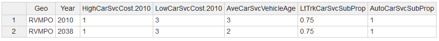
azone_charging_availability.csv
This input file supplies data on proportion of different household types who has available charging
- PropSFChargingAvail: Proportion of single-family dwellings in Azone that have PEV charging facilties installed or able to be installed
- PropMFChargingAvail: Proportion of multi-family dwelling units in Azone that have PEV charging facilities available
- PropGQChargingAvail: Proportion of group quarters dwelling units in Azone that have PEV charging facilities available
Here is a snapshot of the file:
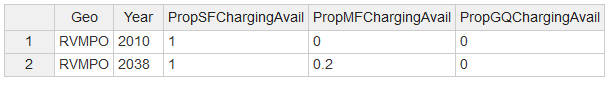
azone_electricity_carbon_intensity.csv
This input file is OPTIONAL. It is only needed if the user wants to modify the carbon intensity of electricity.
- ElectricityCI: Carbon intensity of electricity at point of consumption (grams CO2e per megajoule)
Here is a snapshot of the file:
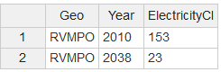
azone_fuel_power_cost.csv
This file supplies data for retail cost of fuel and electricity
- FuelCost:Retail cost of fuel per gas gallon equivalent in dollars
- PowerCost: Retail cost of electric power per kilowatt-hour in dollars
Here is a snapshot of the file:
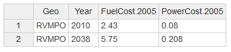
azone_gq_pop_by_age.csv
This file contains group quarters population estimates/forecasts by age for each of the base and future years. The file format includes number of persons within the following six age categories:
- 0-14
- 15-19
- 20-29
- 30-54
- 55-64
- 65 Plus
Here is a snapshot of the file:

azone_gq_pop-prop_by_area-type.csv
This file provides the proportions for groupquarters in different area types.
- MetroLandArea: Land area (excluding large water bodies and large tracts of undevelopable land) in the metropolitan (i.e. urbanized) portion of the Azone
- TownLandArea: Land area (excluding large water bodies and large tracts of undevelopable land) in towns (i.e. urban-like but not urbanized) in the Azone
- RuralAveDensity: Proportion of workers residing in the Azone who work at jobs in the metropolitan (i.e. urbanized) area associated with the Azone
Here is a snapshot of the file:
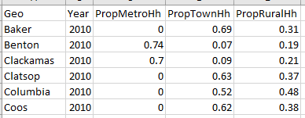
azone_hh_loc_type_prop.csv
This file provides the proportions for households residing in the metropolitan, towns and rural part of the Azone
- PropMetroHh: Proportion of households residing in the metropolitan (i.e. urbanized) part of the Azone
- PropTownHh: Proportion of households residing in towns (i.e. urban-like but not urbanized) in the Azone
- PropRuralHh: Proportion of households residing in rural (i.e. not urbanized or town) parts of the Azone
Here is a snapshot of the file:
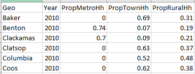
azone_hh_pop_by_age.csv
This file contains population estimates/forecasts by age for each of the base and future years. The file format includes number of persons within six age groups:
- 0-14
- 15-19
- 20-29
- 30-54
- 55-64
- 65 Plus
Here is a snapshot of the file:
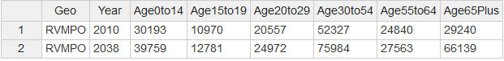
azone_hh_veh_mean_age.csv
This file provides inputs for mean auto age and mean light truck age by Azone.
- AutoMeanAge: Mean age of automobiles owned or leased by households.
- LtTrkMeanAge: Mean age of light trucks owned or leased by households.
Here is a snapshot of the file:
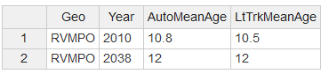
azone_hh_veh_own_taxes.csv
This file provides inputs for flat fees/taxes (i.e. annual cost per vehicle) and ad valorem taxes (i.e. percentage of vehicle value paid in taxes).
- VehOwnFlatRateFee: Annual flat rate tax per vehicle in dollars
- VehOwnAdValoremTax: Annual proportion of vehicle value paid in taxes
Here is a snapshot of the file:
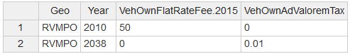
azone_hhsize_targets.csv
Rhis file contains the household-specific targets for the population synthesizer. This file contains two attributes:
- AveHhSize: Average household size for non-group quarters households
- Prop1PerHh: Proportion of non-group quarters households having only one person
Here is a snapshot of the file:
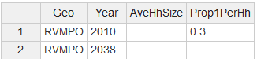
azone_loc_type_land_area.csv
This file provides land area data for different area types
- MetroLandArea: Land area (excluding large water bodies and large tracts of undevelopable land) in the metropolitan (i.e. urbanized) portion of the Azone
- TownLandArea: Land area (excluding large water bodies and large tracts of undevelopable land) in towns (i.e. urban-like but not urbanized) in the Azone
- RuralAveDensity: Average activity density (households and jobs per acre) of rural (i.e. not metropolitan or town) portions of the Azone not including large waterbodies or large tracts of agricultural lands, forest lands, or otherwise protected lands
Here is a snapshot of the file:
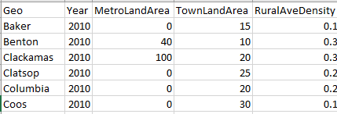
azone_lttrk_prop.csv
This file specifies the light truck proportion of the vehicle fleet.
- LtTrkProp: Proportion of household vehicles that are light trucks (pickup, SUV, van).
Here is a snapshot of the file:
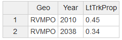
azone_payd_insurance_prop.csv
This file provides inputs on the proportion of households having PAYD insurance.
- PaydHhProp: Proportion of households in the Azone who have pay-as-you-drive insurance for their vehicles
Here is a snapshot of the file:
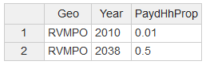
azone_per_cap_inc.csv
This file contains information on regional average per capita household (HHIncomePC) and group quarters (GQIncomePC) income by forecast year in year 2010 dollars. The data can be obtained from the U.S. Department of Commerce Bureau of Economic Analysis for the current year or from regional or state sources for forecast years. In order to use current year dollars just replace 2010 in column labels with current year. For example, if the data is obtained in year 2015 dollars then the column labels in the file shown below will become HHIncomePC.2015 and GQIncomePC.2015.
Here is a snapshot of the file:
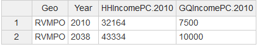
azone_prop_sov_dvmt_diverted.csv
This file provides inputs for a goal for diverting a portion of SOV travel within a 20-mile tour distance (round trip distance).
- PropSovDvmtDiverted: Goals for the proportion of household DVMT in single occupant vehicle tours with round-trip distances of 20 miles or less be diverted to bicycling or other slow speed modes of travel
Here is a snapshot of the file:
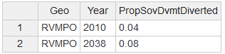
azone_relative_employment.csv
This file contains the ratio of workers to persons by age cohort in the model year relative to the model estimation data year. This file contains five age cohorts:
- RelEmp15to19: Ratio of workers to persons age 15 to 19 in model year versus in estimation data year
- RelEmp20to29: Ratio of workers to persons age 20 to 29 in model year versus in estimation data year
- RelEmp30to54: Ratio of workers to persons age 30 to 54 in model year versus in estimation data year
- RelEmp55to64: Ratio of workers to persons age 55 to 64 in model year versus in estimation data year
- RelEmp65Plus: Ratio of workers to persons age 65 or older in model year versus in estimation data year
Here is a snapshot of the file:
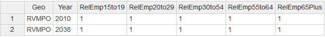
azone_veh_use_taxes.csv
This file supplies data for vehicle related taxes
- FuelTax:Tax per gas gallon equivalent of fuel in dollars
- VmtTax: Tax per gas gallon equivalent of fuel in dollars
- PevSurchgTaxProp: Proportion of equivalent gas tax per mile paid by hydrocarbon fuel consuming vehicles to be charged to plug-in electric vehicles per mile of travel powered by electricity
Here is a snapshot of the file:
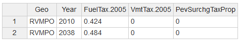
azone_vehicle_access_times.csv
This file supplies data for vehicle access and eagress time.
- OwnedVehAccessTime:Average amount of time in minutes required for access to and egress from a household-owned vehicle for a trip
- HighCarSvcAccessTime: Average amount of time in minutes required for access to and egress from a high service level car service for a trip
- LowCarSvcAccessTime: Average amount of time in minutes required for access to and egress from a low service level car service for a trip
Here is a snapshot of the file:
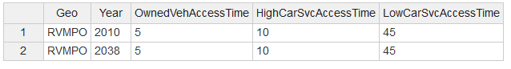
azone_wkr_loc_type_prop.csv
This file provides the proportions for workers residing in Azone who works in the metropolitan, towns and rural part of the Azone
- PropWkrInMetroJobs: Proportion of workers residing in the Azone who work at jobs in the metropolitan (i.e. urbanized) area associated with the Azone
- PropWkrInTownJobs: Proportion of workers residing in the Azone who work at jobs in towns (i.e. urban-like but not urbanized) in the Azone
- PropWkrInRuralJobs: Proportion of workers residing in the Azone who work at jobs in rural (i.e. not urbanized or town) parts of the Azone
- PropMetroJobs: Proportion of the jobs of the metropolitan area that the Azone is associated with that are located in the metropolitan portion of the Azone
Here is a snapshot of the file:
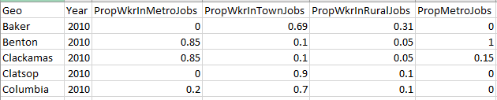
marea_base_year_dvmt.csv
This input file is OPTIONAL. It is only needed if the user wants to modify the adjust dvmt growth factors from base year in by Marea
- ComSvcDvmtGrowthBasis: Factor used to grow commercial service vehicle DVMT in Marea from base year value
- HvyTrkDvmtGrowthBasis: Factor used to grow heavy truck DVMT from base year value
- UrbanLdvDvmt: Average daily vehicle miles of travel on roadways in the urbanized portion of the Marea by light-duty vehicles during the base year
- UrbanHvyTrkDvmt: Average daily vehicle miles of travel on roadways in the urbanized portion of the Marea by heavy trucks during he base year
Here is a snapshot of the file:
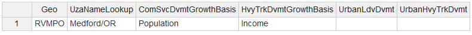
marea_carsvc_availability.csv
This file has the data for acitivity proportions which are served by car services
- CenterPropHighCarSvc: Proportion of activity in center area type that is served by high level car service (i.e. service competitive with household owned car)
- InnerPropHighCarSvc: Proportion of activity in inner area type that is served by high level car service (i.e. service competitive with household owned car)
- OuterPropHighCarSvc: Proportion of activity in outer area type that is served by high level car service (i.e. service competitive with household owned car)
- FringePropHighCarSvc: Proportion of activity in fringe area type that is served by high level car service (i.e. service competitive with household owned car)
Here is a snapshot of the file:
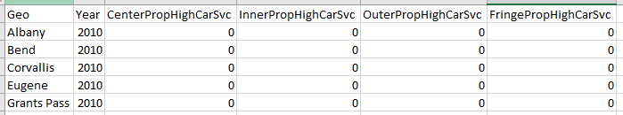
marea_congestion_charges.csv
This input file is OPTIONAL. It is only needed if the user wants to modify the charges of vehicle travel for different congestion levels
- FwyNoneCongChg: Charge per mile (U.S. dollars) of vehicle travel on freeways during periods of no congestion
- FwyModCongChg: Charge per mile (U.S. dollars) of vehicle travel on freeways during periods of moderate congestion
- FwyHvyCongChg: Charge per mile (U.S. dollars) of vehicle travel on freeways during periods of heavy congestion
- FwySevCongChg: Charge per mile (U.S. dollars) of vehicle travel on freeways during periods of severe congestion
- FwyExtCongChg: Charge per mile (U.S. dollars) of vehicle travel on freeways during periods of extreme congestion
- ArtNoneCongChg: Charge per mile (U.S. dollars) of vehicle travel on arterials during periods of no congestion
- ArtModCongChg: Charge per mile (U.S. dollars) of vehicle travel on arterials during periods of moderate congestion
- ArtHvyCongChg: Charge per mile (U.S. dollars) of vehicle travel on arterials during periods of heavy congestion
- ArtSevCongChg: Charge per mile (U.S. dollars) of vehicle travel on arterials during periods of severe congestion
- ArtExtCongChg: Charge per mile (U.S. dollars) of vehicle travel on arterials during periods of extreme congestion
Here is a snapshot of the file:
marea_dvmt_split_by_road_class.csv
This input file is OPTIONAL. It is only needed if the user wants to modify the dvmt split for different road classes.
- LdvFwyArtDvmtProp: Proportion of light-duty daily vehicle miles of travel in the urbanized portion of the Marea occurring on freeway or arterial roadways
- LdvOthDvmtProp: Proportion of light-duty daily vehicle miles of travel in the urbanized portion of the Marea occurring on other roadways
- HvyTrkFwyDvmtProp: Proportion of heavy truck daily vehicle miles of travel in the urbanized portion of the Marea occurring on freeways
- HvyTrkArtDvmtProp: Proportion of heavy truck daily vehicle miles of travel in the urbanized portion of the Marea occurring on arterial roadways
- HvyTrkOthDvmtProp: Proportion of heavy truck daily vehicle miles of travel in the urbanized portion of the Marea occurring on other roadways
- BusFwyDvmtProp: Proportion of bus daily vehicle miles of travel in the urbanized portion of the Marea occurring on freeways
- BusArtDvmtProp: Proportion of bus daily vehicle miles of travel in the urbanized portion of the Marea occurring on arterial roadways
- BusOthDvmtProp: Proportion of bus daily vehicle miles of travel in the urbanized portion of the Marea occuring on other roadways
Here is a snapshot of the file:
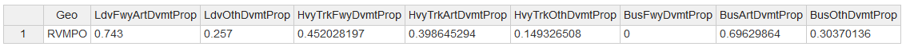
marea_d3bpo4_adj.csv
This file provides the D3bpo4 value for urban, town and rural areas from the EPA 2010 Smart Location Database
- UrbanD3bpo4Adj: Proportion of base urban D3bpo4 value as tabulated from the EPA 2010 Smart Location Database for the urbanized portion of the marea
- TownD3bpo4Adj: Proportion of base town D3bpo4 value as tabulated from the EPA 2010 Smart Location Database for towns
- RuralD3bpo4Adj: Proportion of base town D3bpo4 value as tabulated from the EPA 2010 Smart Location Database for rural areas
Here is a snapshot of the file:
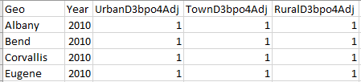
marea_lane_miles.csv
This file contains inputs on the numbers of freeway lane-miles and arterial lane-miles by Marea and year.
- FwyLaneMi: Lane-miles of roadways functionally classified as freeways or expressways in the urbanized portion of the metropolitan area
- ArtLaneMi: Lane-miles of roadways functionally classified as arterials (but not freeways or expressways) in the urbanized portion of the metropolitan area
Here is a snapshot of the file:
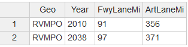
marea_mix_targets.csv
This file represents Marea target for proportion of households located in mixed-use neighborhoods (or NA if no target)
- UrbanMixProp: Marea target for proportion of households located in mixed-use neighborhoods (or NA if no target)
Here is a snapshot of the file:
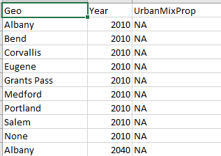
marea_operations_deployment.csv
This input file is OPTIONAL. It is only needed if the user wants to modify the proportion of dvmt affected by operations for different road classes.
- RampMeterDeployProp: Proportion of freeway DVMT affected by ramp metering deployment
- IncidentMgtDeployProp: Proportion of freeway DVMT affected by incident management deployment
- SignalCoordDeployProp: Proportion of arterial DVMT affected by signal coordination deployment
- AccessMgtDeployProp: Proportion of arterial DVMT affected by access management deployment
- OtherFwyOpsDeployProp: Proportion of freeway DVMT affected by deployment of other user-defined freeway operations measures
- OtherArtOpsDeployProp: Proportion of arterial DVMT affected by deployment of other user-defined arterial operations measures
Here is a snapshot of the file:
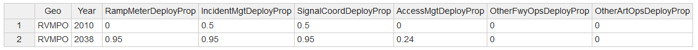
marea_parking-avail_by_area-type.csv
This file has the data for avereage number of parkings available to households
- CenterPkgSpacesPerSFDU: Average number of free parking spaces available to residents of single-family dwelling units in center area type
- InnerPkgSpacesPerSFDU: Average number of free parking spaces available to residents of single-family dwelling units in inner area type
- OuterPkgSpacesPerSFDU: Average number of free parking spaces available to residents of single-family dwelling units in outer area type
- CenterPkgSpacesPerMFDU: Average number of free parking spaces available to residents of multifamily dwelling units in center area type
- InnerPkgSpacesPerMFDU: Average number of free parking spaces available to residents of multifamily dwelling units in inner area type
- OuterPkgSpacesPerMFDU: Average number of free parking spaces available to residents of multifamily dwelling units in outer area type
- CenterPkgSpacesPerGQ: Average number of free parking spaces available to group quarters residents in center area type
- InnerPkgSpacesPerGQ: Average number of free parking spaces available to group quarters residents in inner area type
- OuterPkgSpacesPerGQ: Average number of free parking spaces available to group quarters residents in outer area type
Here is a snapshot of the file:
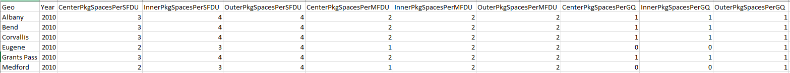
marea_parking-cost_by_area-type.csv
This file has the data related to parking costs and population proportions paying the parking costs
- CenterPropWkrPay: Proportion of workers who pay for parking in center area type
- InnerPropWkrPay: Proportion of workers who pay for parking in inner area type
- OuterPropWkrPay: Proportion of workers who pay for parking in outer area type
- CenterPropCashOut: Proportions of workers paying for parking in a cash-out-buy-back program in center area type
- InnerPropCashOut: Proportions of workers paying for parking in a cash-out-buy-back program in inner area type
- OuterPropCashOut: Proportions of workers paying for parking in a cash-out-buy-back program in outer area type
- CenterPkgCost: Average daily cost for long-term parking (e.g. paid on monthly basis) in center area type
- InnerPkgCost: Average daily cost for long-term parking (e.g. paid on monthly basis) in inner area type
- OuterPkgCost: Average daily cost for long-term parking (e.g. paid on monthly basis) in outer area type
Here is a snapshot of the file:
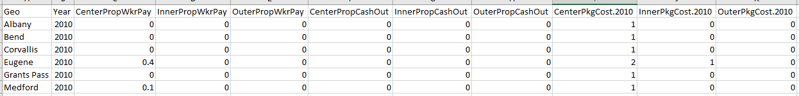
marea_speed_smooth_ecodrive.csv
This input file supplies information of deployment of speed smoothing and ecodriving by road class and vehicle type
- FwySmooth:Fractional deployment of speed smoothing traffic management on freeways, where 0 is no deployment and 1 is the full potential fuel savings
- ArtSmooth: Fractional deployment of speed smoothing traffic management on arterials, where 0 is no deployment and 1 is the full potential fuel savings
- LdvEcoDrive: Eco-driving penetration for light-duty vehicles; the fraction of vehicles from 0 to 1
- HvyTrkEcoDrive: Eco-driving penetration for heavy-duty vehicles; the fraction of vehicles from 0 to 1
Here is a snapshot of the file:
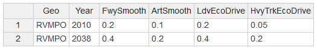
marea_transit_ave_fuel_carbon_intensity.csv
This input file is OPTIONAL. It is only needed if the user wants to modify the average carbon intensity of fuel used by transit.
- TransitVanFuelCI: Average carbon intensity of fuel used by transit vans (grams CO2e per megajoule)
- TransitBusFuelCI: Average carbon intensity of fuel used by transit buses (grams CO2e per megajoule)
- TransitRailFuelCI: Average carbon intensity of fuel used by transit rail vehicles (grams CO2e per megajoule)
Here is a snapshot of the file:
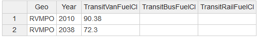
marea_transit_biofuel_mix.csv
This input file is OPTIONAL. It is only needed if the user wants to modify the biofuel used by transit services.
- TransitEthanolPropGasoline: Ethanol proportion of gasoline used by transit vehicles
- TransitBiodieselPropDiesel: Biodiesel proportion of diesel used by transit vehicles
- TransitRngPropCng: Renewable natural gas proportion of compressed natural gas used by transit vehicles
Here is a snapshot of the file:
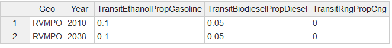
marea_transit_fuel.csv
This input file is OPTIONAL. It is only needed if the user wants to modify the transit fuels proportions.
- VanPropDiesel: Proportion of non-electric transit van travel powered by diesel
- VanPropGasoline: Proportion of non-electric transit van travel powered by gasoline
- VanPropCng: Proportion of non-electric transit van travel powered by compressed natural gas
- BusPropDiesel: Proportion of non-electric transit bus travel powered by diesel
- BusPropGasoline: Proportion of non-electric transit bus travel powered by gasoline
- BusPropCng: Proportion of non-electric transit bus travel powered by compressed natural gas
- RailPropDiesel: Proportion of non-electric transit rail travel powered by diesel
- RailPropGasoline: Proportion of non-electric transit rail travel powered by gasoline
Here is a snapshot of the file:
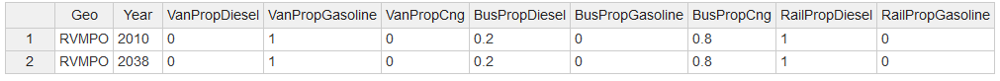
marea_transit_powertrain_prop.csv
This input file is OPTIONAL. It is only needed if the user wants to modify the mixes of transit vehicle powertrains.
- VanPropIcev: Proportion of transit van travel using internal combustion engine powertrains
- VanPropHev: Proportion of transit van travel using hybrid electric powertrains
- VanPropBev: Proportion of transit van travel using battery electric powertrains
- BusPropIcev: Proportion of transit bus travel using internal combustion engine powertrains
- BusPropHev: Proportion of transit bus travel using hybrid electric powertrains
- BusPropBev: Proportion of transit bus travel using battery electric powertrains
- RailPropIcev: Proportion of transit rail travel using internal combustion engine powertrains
- RailPropHev: Proportion of transit rail travel using hybrid electric powertrains
- RailPropEv: Proportion of transit rail travel using electric powertrains
Here is a snapshot of the file:
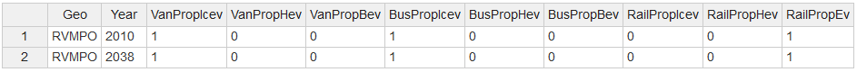
marea_transit_service.csv
This file contains annual revenue-miles for different transit modes for metropolitan area.
DRRevMi: Annual revenue-miles of demand-responsive public transit service VPRevMi: Annual revenue-miles of van-pool and similar public transit service MBRevMi: Annual revenue-miles of standard bus public transit service RBRevMi: Annual revenue-miles of rapid-bus and commuter bus public transit service MGRevMi: Annual revenue-miles of monorail and automated guideway public transit service SRRevMi: Annual revenue-miles of streetcar and trolleybus public transit service HRRevMi: Annual revenue-miles of light rail and heavy rail public transit service CRRevMi: Annual revenue-miles of commuter rail, hybrid rail, cable car, and aerial tramway public transit service
Here is a snapshot of the file:
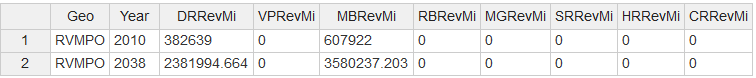
marea_travel-demand-mgt_by_area-type.csv
This file has the data for proportions participating in demand management programs
- CenterEcoProp: Proportion of workers working in center area type in Marea who participate in strong employee commute options program
- InnerEcoProp: Proportion of workers working in inner area type in Marea who participate in strong employee commute options program
- OuterEcoProp: Proportion of workers working in outer area type in Marea who participate in strong employee commute options program
- FringeEcoProp: Proportion of workers working in fringe area type in Marea who participate in strong employee commute options program
- CenterImpProp: Proportion of households residing in center area type in Marea who participate in strong individualized marketing program
- InnerImpProp: Proportion of households residing in inner area type in Marea who participate in strong individualized marketing program
- OuterImpProp: Proportion of households residing in outer area type in Marea who participate in strong individualized marketing program
- FringeImpProp: Proportion of households residing in fringe area type in Marea who participate in strong individualized marketing program
Here is a snapshot of the file:
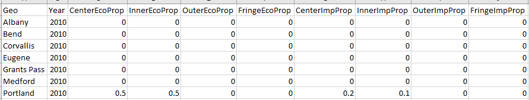
marea_uza_profile_names.csv
This file provides the name of a specific urbanized area for the urbanized area profile to use in SimBzone creation.
- UzaProfileName: Name of a specific urbanized area for the urbanized area profile to use in SimBzone creation or one of the following: small, medium-small, medium, medium-large, large, very-large
Here is a snapshot of the file:
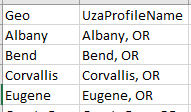
other_ops_effectiveness.csv
This input file is OPTIONAL. It is only needed if the user wants to modify the other delay effects of operations in different road classes
- Level: Congestion levels: None = none, Mod = moderate, Hvy = heavy, Sev = severe, Ext = extreme
- Art_Rcr: Percentage reduction of recurring arterial delay that would occur with full deployment of other user-defined arterial operations measures
- Art_NonRcr: Percentage reduction of non-recurring arterial delay that would occur with full deployment of other user-defined arterial operations measures
- Fwy_Rcr: Percentage reduction of recurring freeway delay that would occur with full deployment of other user-defined freeway operations measures
- Fwy_NonRcr: Percentage reduction of non-recurring freeway delay that would occur with full deployment of other user-defined freeway operations measures
Here is a snapshot of the file:
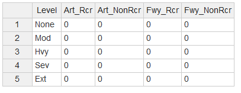
region_ave_fuel_carbon_intensity.csv
This input file is OPTIONAL. It is only needed if the user wants to modify the average carbon density for different vehicle types.
- HhFuelCI: Average carbon intensity of fuels used by household vehicles (grams CO2e per megajoule)
- CarSvcFuelCI: Average carbon intensity of fuels used by car service vehicles (grams CO2e per megajoule)
- ComSvcFuelCI: Average carbon intensity of fuels used by commercial service vehicles (grams CO2e per megajoule)
- HvyTrkFuelCI: Average carbon intensity of fuels used by heavy trucks (grams CO2e per megajoule)
- TransitVanFuelCI: Average carbon intensity of fuels used by transit vans (grams CO2e per megajoule)
- TransitBusFuelCI: Average carbon intensity of fuels used by transit buses (grams CO2e per megajoule)
- TransitRailFuelCI: Average carbon intensity of fuels used by transit rail vehicles (grams CO2e per megajoule)
Here is a snapshot of the file:
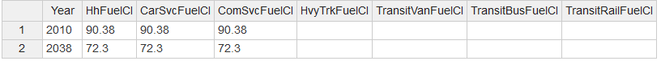
region_base_year_hvytrk_dvmt.csv
This input file is OPTIONAL. It is only needed if the user wants to adjust heavy truck dvmt for base year
- HvyTrkDvmtGrowthBasis: Factor used to grow heavy truck DVMT from base year value
- HvyTrkDvmt: Average daily vehicle miles of travel on roadways in the region by heavy trucks during he base year
- HvyTrkDvmtUrbanProp: Proportion of Region heavy truck daily vehicle miles of travel occurring on urbanized area roadways
Here is a snapshot of the file:
region_carsvc_powertrain_prop.csv
This input file is OPTIONAL. It is only needed if the user wants to modify the powertrain proportion of car services.
- CarSvcAutoPropIcev: Proportion of car service automobile travel powered by internal combustion engine powertrains
- CarSvcAutoPropHev: Proportion of car service automobile travel powered by hybrid electric powertrains
- CarSvcAutoPropBev: Proportion of car service automobile travel powered by battery electric powertrains
- CarSvcLtTrkPropIcev: Proportion of car service light truck travel powered by internal combustion engine powertrains
- CarSvcLtTrkPropHev: Proportion of car service light truck travel powered by hybrid electric powertrains
- CarSvcLtTrkPropBev: Proportion of car service light truck travel powered by battery electric powertrains
Here is a snapshot of the file:
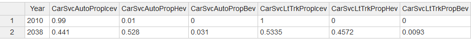
region_comsvc_lttrk_prop.csv
This input file defines the proportion of commerical vehicles that are light trucks.
- ComSvcLtTrkProp: Regional proportion of commercial service vehicles that are light trucks
Here is a snapshot of the file:
| Year | ComSvcLtTrkProp | | —- | ————— | | 2010 | 0.51 | | 2040 | 0.51 |
region_comsvc_powertrain_prop.csv
This input file is OPTIONAL. It is only needed if the user wants to modify the powertrain proportion of commercial vehicles.
- ComSvcAutoPropIcev: Proportion of commercial service automobile travel powered by internal combustion engine powertrains
- ComSvcAutoPropHev: Proportion of commercial service automobile travel powered by hybrid electric powertrains
- ComSvcAutoPropBev: Proportion of commercial service automobile travel powered by battery electric powertrains
- ComSvcLtTrkPropIcev: Proportion of commercial service light truck travel powered by internal combustion engine powertrains
- ComSvcLtTrkPropHev: Proportion of commercial service light truck travel powered by hybrid electric powertrains
- ComSvcLtTrkPropBev: Proportion of commercial service light truck travel powered by battery electric powertrains
Here is a snapshot of the file:
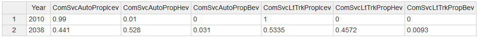
region_comsvc_veh_mean_age.csv
This input file contains average age of commercial service vehicles
- AveComSvcVehicleAge: average age of commercial service vehicles
Here is a snapshot of the file:
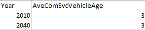
region_hh_driver_adjust_prop.csv
This file specifies the relative driver licensing rate relative to the model estimation data year in order to account for observed or projected changes in licensing rates.
- Drv15to19AdjProp: Target proportion of unadjusted model number of drivers 15 to 19 years old (
1= no adjustment) - Drv20to29AdjProp: Target proportion of unadjusted model number of drivers 20 to 29 years old (
1= no adjustment) - Drv30to54AdjProp: Target proportion of unadjusted model number of drivers 30 to 54 years old (
1= no adjustment) - Drv55to64AdjProp: Target proportion of unadjusted model number of drivers 55 to 64 years old (
1= no adjustment) - Drv65PlusAdjProp: Target proportion of unadjusted model number of drivers 65 or older (
1= no adjustment)
Here is a snapshot of the file:
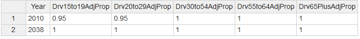
region_hvytrk_powertrain_prop.csv
This input file is OPTIONAL. It is only needed if the user wants to modify the powertrain proportion of heavy duty trucks.
- HvyTrkPropIcev: Proportion of heavy truck travel powered by internal combustion engine powertrains
- HvyTrkPropHev: Proportion of heavy truck travel powered by hybrid electric powertrains
- HvyTrkPropBev: Proportion of heavy truck travel powered by battery electric powertrains
Here is a snapshot of the file:
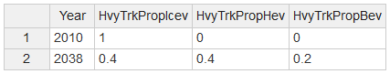
region_prop_externalities_paid.csv
This file supplies data for climate change and other social costs.
- PropClimateCostPaid: Proportion of climate change costs paid by users (i.e. ratio of carbon taxes to climate change costs
- PropOtherExtCostPaid: Proportion of other social costs paid by users
Here is a snapshot of the file:
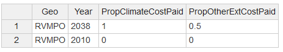
region_road_cost.csv
This file supplies data for different types of road costs
- RoadBaseModCost: Average base modernization cost per light-duty vehicle mile traveled (dollars per vehicle mile). Base modernization includes roadway improvements exclusive of addition of lanes.
- RoadPresOpMaintCost: Average road preservation, operations, and maintenance cost per light-duty vehicle mile traveled (dollars per vehicle mile).
- RoadOtherCost: Average other road cost (e.g. administration, planning, project development, safety) per light-duty vehicle mile traveled (dollars per vehicle mile).
- FwyLnMiCost: Average cost to build one freeway lane-mile (dollars per lane-mile)
- ArtLnMiCost: Average cost to build one arterial lane-mile (dollars per lane-mile)
- HvyTrkPCE: Passenger car equivalent (PCE) for heavy trucks. PCE indicates the number of light-duty vehicles a heavy truck is equivalent to in calculating road capacity.
Here is a snapshot of the file:
| Year | RoadBaseModCost.2005 | RoadPresOpMaintCost.2005 | RoadOtherCost.2005 | FwyLnMiCost.2005.1e3 | ArtLnMiCost.2005.1e3 | HvyTrkPCE |
|---|---|---|---|---|---|---|
| 2010 | 0.004 | 0.01 | 0.015 | 4900 | 1800 | 3 |
| 2040 | 0.004 | 0.01 | 0.015 | 4900 | 1800 | 3 |
VERPAT Input Files
The scenario inputs are split into four (4) categories: Built Environment, Demand, Policy, and Supply. There are two ways to specify these inputs. CSV Inputs are specified in a *.csv file and JSON Inputs are specified in model_parameters.json file. The users are encouraged to change these inputs to build different scenarios. The RPAT to VERPAT the connection between RPAT inputs to VERPAT inputs.
- CSV Inputs
- CSV Inputs
- JSON Inputs
- CSV Inputs
- CSV Inputs
- JSON Inputs
Model Parameters
There are two ways to specify model parameters. CSV Parameters are specified in a *.csv file and JSON Parameters in a model_parameters.json file. While you are provided access to the model parameters, you are encouraged to use the default parameter values unless directed to use alternatives. Editing modeling parameters should be based only on research pertaining to local data sources and may result in unpredictable results.
- CSV Parameters
- model_accident_rates.csv
- model_fuel_prop_by_veh.csv
- model_fuel_composition_prop.csv
- model_fuel_co2.csv
- model_place_type_elasticities.csv
- model_place_type_relative_values.csv
- model_tdm_ridesharing.csv
- model_tdm_transit.csv
- model_tdm_transitlevels.csv
- model_tdm_vanpooling.csv
- model_tdm_workschedule.csv
- model_tdm_workschedulelevels.csv
- model_transportation_costs.csv
- model_veh_mpg_by_year.csv
- model_phev_range_prop_mpg_mpkwh.csv
- model_hev_prop_mpg.csv
- model_ev_range_prop_mpkwh.csv
- JSON Parameters
Input Files to Change
The user should change the input files described here.
Built Environment
CSV Inputs
bzone_pop_emp_prop.csv
Population and Jobs by Place Type: This file contains the distribution of population and employment among the 13 place types for base and future year. See this explanation for more infomation regarding place types. Each column, for each year, must sum to one (1). It is acceptable to have no land use (i.e. a value of 0) in certain categories.
The yearly TAZ employment and population totals were summed by the 13 place type and then scaled to total one for both employment and population. The allocation of growth between the base and the future years in population and employment to each of the 13 place types is captured by the rows containing future years. The discussion of the population and jobs by place type input above describes how to allocate existing land use to the 13 place types. A similar approach can be used to allocate expected growth from spatial planning resources such as TAZ or Census Block Group level forecasts to the place types. Here is a snapshot of the file:
| Geo | Year | Pop | Emp |
|---|---|---|---|
| Rur | 2005 | 0.05 | 0.1 |
| Sub_R | 2005 | 0.3 | 0 |
| Sub_E | 2005 | 0 | 0.2 |
| Sub_M | 2005 | 0.1 | 0.1 |
| Sub_T | 2005 | 0 | 0 |
| CIC_R | 2005 | 0.15 | 0 |
| CIC_E | 2005 | 0 | 0.2 |
| CIC_M | 2005 | 0.1 | 0.1 |
| CIC_T | 2005 | 0 | 0 |
| UC_R | 2005 | 0.1 | 0 |
| UC_E | 2005 | 0 | 0.1 |
| UC_M | 2005 | 0.1 | 0.1 |
| UC_T | 2005 | 0.1 | 0.1 |
| Rur | 2035 | 0.05 | 0.1 |
| Sub_R | 2035 | 0.3 | 0 |
| Sub_E | 2035 | 0 | 0.2 |
| Sub_M | 2035 | 0.1 | 0.1 |
| Sub_T | 2035 | 0 | 0 |
| CIC_R | 2035 | 0.15 | 0 |
| CIC_E | 2035 | 0 | 0.2 |
| CIC_M | 2035 | 0.1 | 0.1 |
| CIC_T | 2035 | 0 | 0 |
| UC_R | 2035 | 0.1 | 0 |
| UC_E | 2035 | 0 | 0.1 |
| UC_M | 2035 | 0.1 | 0.1 |
| UC_T | 2035 | 0.1 | 0.1 |
Demand
CSV Inputs
region_trips_per_cap.csv
Auto and transit trips per capita: This file contains regional averages for auto and transit trips per capita per day for the base year.
- Auto is the regional average of auto trips per capita, including drive alone and shared ride travel. This data can be derived from the National Household Travel Survey by region or from a local household travel survey or regional travel demand forecasting model.
- Transit is the regional average of transit trips per capita, including walk and drive access to transit. This data can be derived from the National Transit Database where the annual database contains a “service” table that has annual transit trip data for each transit operator or from a local household travel survey or regional travel demand forecasting model.
Here is a snapshot of the files:
| Mode | Trips |
|---|---|
| Auto | 3.2 |
| Transit | 0.4 |
azone_employment_by_naics.csv
Employment: This file contains employment data for each of the counties that make up the region. The file is derived from County Business Pattern (CBP) data by county. Industries are categorized by the North American Industrial Classification System (NAICS) 6 digit codes. Firm size categories are:
- n1_4: 1- 4 employees
- n5_9: 5-9 employees
- n10_19: 10-19 employees
- n20_99: 20-99 employees
- n100_249: 100-249 employees
- n250_499: 250-499 employees
- n500_999: 500-999 employees
- n1000: 1,000 or More Employee Size Class
- n1000_1: 1,000-1,499 employees
- n1000_2: 1,500-2,499 employees
- n1000_3: 2,500 to 4, 999 Employees
- n1000_4: Over 5,000 employees
While the county field is required to be present, the business synthesis process does not require a meaningful value and therefore users may simply enter ‘region’. The consistency in the naming of the “region” should be maintained across all the files that contains the label “county” or “Geo”. It is also not necessary to use such detailed NAICS categories if those are not available; the current business synthesis model and subsequent models do not use this level of detail (although future versions of the model may) – at minimum, the number of establishments for all employment types can be provided by size category. Regions with significant employment in industries such as government and public administration that are not covered by the CBP may need to add records to the file that cover this type of employment to more accurately match employment totals in their region. The two additional fields contained in the file are:
- emp: Total number of employees
- est: Total number of establishments
Here is the snapshot of the file:
| county | year | naics | emp | est | n1_4 | n5_9 | n10_19 | n20_49 | n50_99 | n100_249 | n250_499 | n500_999 | n1000 | n1000_1 | n1000_2 | n1000_3 | n1000_4 |
|---|---|---|---|---|---|---|---|---|---|---|---|---|---|---|---|---|---|
| Multnomah | 2005 | 113110 | 0 | 5 | 2 | 1 | 0 | 2 | 0 | 0 | 0 | 0 | 0 | 0 | 0 | 0 | 0 |
| Multnomah | 2005 | 113310 | 0 | 3 | 2 | 0 | 0 | 1 | 0 | 0 | 0 | 0 | 0 | 0 | 0 | 0 | 0 |
| Multnomah | 2005 | 114111 | 0 | 1 | 0 | 1 | 0 | 0 | 0 | 0 | 0 | 0 | 0 | 0 | 0 | 0 | 0 |
| Multnomah | 2005 | 114112 | 0 | 1 | 1 | 0 | 0 | 0 | 0 | 0 | 0 | 0 | 0 | 0 | 0 | 0 | 0 |
| Multnomah | 2005 | 115114 | 0 | 1 | 0 | 0 | 0 | 0 | 0 | 0 | 1 | 0 | 0 | 0 | 0 | 0 | 0 |
| Multnomah | 2005 | 115210 | 0 | 4 | 3 | 1 | 0 | 0 | 0 | 0 | 0 | 0 | 0 | 0 | 0 | 0 | 0 |
| Multnomah | 2005 | 115310 | 0 | 5 | 2 | 0 | 1 | 1 | 1 | 0 | 0 | 0 | 0 | 0 | 0 | 0 | 0 |
| Multnomah | 2005 | 212319 | 0 | 1 | 1 | 0 | 0 | 0 | 0 | 0 | 0 | 0 | 0 | 0 | 0 | 0 | 0 |
| Multnomah | 2005 | 212321 | 0 | 4 | 1 | 1 | 1 | 1 | 0 | 0 | 0 | 0 | 0 | 0 | 0 | 0 | 0 |
azone_hh_pop_by_age.csv
Household population: This file contains population estimates/forecasts by county and age cohort for each of the base and future years. The file format includes six age categories used by the population synthesis model:
- 0-14
- 15-19
- 20-29
- 30-54
- 55-64
- 65 Plus
Future year data must be developed by the user; in many regions population forecasts are available from regional or state agencies and/or local academic sources. As with the employment data inputs the future data need not be county specific. Rather, regional totals by age group can be entered into the file with a value such as “region” entered in the county field.
Here is a snapshot of the file:
| Geo | Year | Age0to14 | Age15to19 | Age20to29 | Age30to54 | Age55to64 | Age65Plus |
|---|---|---|---|---|---|---|---|
| Multnomah | 2005 | 129869 | 41133 | 99664 | 277854 | 71658 | 72648 |
| Multnomah | 2035 | 169200 | 48800 | 144050 | 327750 | 116100 | 162800 |
azone_gq_pop_by_age.csv :construction:
Group quarter population: This file contains group quarters population estimates/forecasts by county and age cohort for each of the base and future years. The file format includes six age categories used by the population synthesis model:
- 0-14
- 15-19
- 20-29
- 30-54
- 55-64
- 65 Plus
Here is a snapshot of the file:
| Geo | Year | GrpAge0to14 | GrpAge15to19 | GrpAge20to29 | GrpAge30to54 | GrpAge55to64 | GrpAge65Plus |
|---|---|---|---|---|---|---|---|
| Multnomah | 2005 | 0 | 0 | 0 | 1 | 0 | 0 |
| Multnomah | 2035 | 0 | 0 | 0 | 1 | 0 | 0 |
azone_hhsize_targets.csv :construction:
Household size (azone_hhsize_targets.csv): This file contains the household specific targets. This contain two household specific attributes:
- AveHhSize: Average household size of households (non-group quarters)
- Prop1PerHh: Proportion of households (non-group quarters) having only one person
Here is a snapshot of the file:
| Geo | Year | AveHhSize | Prop1PerHh |
|---|---|---|---|
| Multnomah | 2005 | NA | NA |
| Multnomah | 2035 | NA | NA |
azone_per_cap_inc.csv
Regional income: This file contains information on regional average per capita household (HHIncomePC) and group quarters (GQIncomePC) income by forecast year in year 2000 dollars. The data can be obtained from the U.S. Department of Commerce Bureau of Economic Analysis for the current year or from regional or state sources for forecast years. In order to use current year dollars just replace 2000 in column labels with current year. For example, if the data is obtained in year 2005 dollars then the column labels in the file shown below will become HHIncomePC.2005 and GQIncomePC.2005. Here is a snapshot of the file:
| Geo | Year | HHIncomePC.2000 | GQIncomePC.2000 |
|---|---|---|---|
| Multnomah | 2005 | 32515 | 0 |
| Multnomah | 2035 | 40000 | 0 |
azone_relative_employment.csv
Relative employment: This file contains ratio of workers to persons by age cohort in model year vs. estimation data year. The relative employment value for each age group, which is the employment rate for the age group relative to the employment rate for the model estimation year data is used to adjust the relative employment to reflect changes in relative employment for other years. This file contains five age cohorts:
- RelEmp15to19: Ratio of workers to persons age 15 to 19 in model year vs. in estimation data year
- RelEmp20to29: Ratio of workers to persons age 20 to 29 in model year vs. in estimation data year
- RelEmp30to54: Ratio of workers to persons age 30 to 54 in model year vs. in estimation data year
- RelEmp55to64: Ratio of workers to persons age 55 to 64 in model year vs. in estimation data year
- RelEmp65Plus: Ratio of workers to persons age 65 or older in model year vs. in estimation data year
Here is a snapshot of the file:
| Geo | Year | RelEmp15to19 | RelEmp20to29 | RelEmp30to54 | RelEmp55to64 | RelEmp65Plus |
|---|---|---|---|---|---|---|
| Multnomah | 2005 | 1 | 1 | 1 | 1 | 1 |
| Multnomah | 2035 | 1 | 1 | 1 | 1 | 1 |
region_truck_bus_vmt.csv
Truck and bus vmt: This file contains the region’s proportion of VMT by truck and bus as well as the distribution of that VMT across functional classes (freeway, arterial, other). The file includes one row for bus VMT data and one row for Truck VMT data. It should be noted that it is not necessary to enter values in the PropVmt column for BusVmt as this is calculated using the values in the transportation_supply.csv #EDIT (marea_rev_miles_pc.csv?) user input file. The truck VMT proportion (PropVMT column, TruckVMT row) can be obtained from Highway Performance Monitoring System data and local sources or the regional travel demand model if one exists. The proportions of VMT by functional class can be derived from the Federal Highway Cost Allocation Study and data from transit operators. The Federal Highway Cost Allocation Study (Table II-6, 1997 Federal Highway Cost Allocation Study Final Report, Chapter II is used to calculate the average proportion of truck VMT by functional class. Data from transit authorities are used to calculate the proportions of bus VMT by urban area functional class. Here is a snapshot of the file:
| Type | PropVmt | Fwy | Art | Other |
|---|---|---|---|---|
| BusVmt | 0 | 0.15 | 0.591854 | 0.258146 |
| TruckVmt | 0.08 | 0.452028 | 0.398645 | 0.149327 |
JSON Inputs
BaseLtVehDvmt
Light vehicle dvmt (BaseLtVehDvmt): Total light vehicle daily VMT for the base year in thousands of miles. This data can be derived from a combination of Highway Performance Monitoring System data, Federal Highway Cost Allocation Study data, and regional data. Light vehicle daily VMT can be estimated by subtracting truck and bus VMT from total VMT provided in the Highway Performance Monitoring System (HPMS). Regional travel demand model outputs can also be used to derive these data. It should be defined in model_parameters.json as follows:
{
"NAME" : "BaseLtVehDvmt",
"VALUE": "27244",
"TYPE" : "compound",
"UNITS" : "MI/DAY",
"PROHIBIT" : "c('NA', '< 0')",
"ISELEMENTOF" : ""
}
BaseFwyArtProp
Dvmt proportion by functional class (BaseFwyArtProp): The proportions of daily VMT for light vehicles that takes place on freeways and arterials (i.e., the remainder of VMT takes place on lower functional class roads for the base year. This data can be derived from a combination of Highway Performance Monitoring System data, Federal Highway Cost Allocation Study data, and regional data. The proportions of light vehicle daily VMT on freeways and arterials can be derived from the HPMS data. Regional travel demand model outputs can also be used to derive these data. It should be defined in model_parameters.json as follows:
{
"NAME" : "BaseFwyArtProp",
"VALUE": "0.77",
"TYPE" : "double",
"UNITS" : "proportion",
"PROHIBIT" : "c('NA', '< 0', '> 1')",
"ISELEMENTOF" : ""
}
EmploymentGrowth
Employment Growth (EmploymentGrowth): This variable represents a growth rate for employment in the region between the base year and the future year. A rate of 1 indicates no changes in overall employment, a value of more than 1 indicates some growth (e.g., 1.5 = 50% growth) and a value of less than 1 indicates decline in employment. It should be defined in model_parameters.json as follows:
{
"NAME": "EmploymentGrowth",
"VALUE": "1.5",
"TYPE": "double",
"UNITS": "multiplier",
"PROHIBIT": "",
"ISELEMENTOF": ""
}
Transport Supply
CSV Inputs
marea_lane_miles.csv
Road lane miles: This file contains the amount of transportation supply by base year in terms of lane miles of freeways and arterial roadways in the region. The base year data is duplicated for future year. Freeway and Arterial are total lane miles for those functional classes in the region. These data can be derived from the Federal Highway Administration’s (FHWA) Highway Statistics data. Here is a snapshot of the file:
| Geo | Year | FwyLaneMi | ArtLaneMi |
|---|---|---|---|
| Multnomah | 2005 | 250 | 900 |
| Multnomah | 2035 | 250 | 900 |
marea_rev_miles_pc.csv
Transit revenue miles: This file contains the amount of transportation supply by base year in terms of the revenue miles operating by the transit system in the region. The base year data is duplicated for future year. Bus and Rail are annual bus and rail revenue miles per capita for the region. These data can be derived from the National Transit Database, where the annual database contains a “service” table that has annual revenue mile data by mode for each transit operator. Here is a snapshot of the file:
| Geo | Year | BusRevMiPC | RailRevMiPC |
|---|---|---|---|
| Multnomah | 2005 | 19 | 4 |
| Multnomah | 2035 | 19 | 4 |
Policy
CSV Inputs
region_commute_options.csv
Percentage of employees offered commute options: This file contains assumptions about the availability and participation in work based travel demand management programs. The policies are ridesharing programs, transit pass programs, telecommuting or alternative work schedule programs, and vanpool programs. For each, the user enters the proportion of workers who participate (the data items with the “Participation” suffix). For one program, the transit subsidy, the user must also enter the subsidy level in dollars for the TransitSubsidyLevel data item. Here is a snapshot of the file:
| TDMProgram | DataItem | DataValue |
|---|---|---|
| Ridesharing | RidesharingParticipation | 0.05 |
| TransitSubsidy | TransitSubsidyParticipation | 0.1 |
| TransitSubsidy | TransitSubsidyLevel | 1.25 |
| WorkSchedule | Schedule980Participation | 0.01 |
| WorkSchedule | Schedule440Participation | 0.01 |
| WorkSchedule | Telecommute1.5DaysParticipation | 0.01 |
| Vanpooling | LowLevelParticipation | 0.04 |
| Vanpooling | MediumLevelParticipation | 0.01 |
| Vanpooling | HighLevelParticipation | 0.01 |
azone_its_prop.csv
Percent road miles with ITS treatment: This file is an estimate of the proportion of road miles that have improvements which reduce incidents through ITS treatments in both the base and future years. Values entered should be between 0 and 1, with 1 indicating that 100% of road miles are treated. The ITS policy measures the effects of incident management supported by ITS. The ITS table is used to inform the congestion model and the travel demand model. The model uses the mean speeds with and without incidents to compute an overall average speed by road type and congestion level providing a simple level of sensitivity to the potential effects of incident management programs on delay and emissions. The ITS treatments are evaluated only on freeways and arterials. The ITS treatments that can be evaluated are those that the analyst considers will reduce non-recurring congestion due to incidents. This policy does not deal with other operational improvements such as signal coordination, or temporary capacity increases such as allowing shoulder use in the peak. Here is a snapshot of the file:
| Geo | Year | ITS |
|---|---|---|
| Multnomah | 2005 | 0 |
| Multnomah | 2035 | 0 |
region_light_vehicles.csv
Bicycling/light vehicles targets: This file contains input data for the non-motorized vehicle model. In VERPAT, non-motorized vehicles are bicycles, and also electric bicycles, segways, and similar vehicles that are small, light-weight and can travel at bicycle speeds or slightly higher. The parameters are as follows:
- TargetProp: non-motorized vehicle ownership rate (average ratio of non-motorized vehicles to driver age population)
- Threshold: single-occupant vehicle (SOV) tour mileage threshold used in the SOV travel proportion model. This is the upper limit for tour lengths that are suitable for reallocation to non-motorized modes.
- PropSuitable: proportion of SOV travel suitable for non-motorized vehicle travel. This variable describes the proportion of SOV tours within the mileage threshold for which non-motorized vehicles might be substituted. This variable takes into account such factors as weather and trip purpose.
The non-motorized vehicle model predicts the ownership and use of non-motorized vehicles (where non-motorized vehicles are bicycles, and also electric bicycles, segways and similar vehicles that are small, light-weight and can travel at bicycle speeds or slightly higher than bicycle speeds). The core concept of the model is that non-motorized vehicle usage will primarily be a substitute for short-distance SOV travel. Therefore, the model estimates the proportion of the household vehicle travel that occurs in short-distance SOV tours. The model determines the maximum potential for household VMT to be diverted to non-motorized vehicles, which is also dependent on the availability of non-motorized vehicles. Note that bike share programs (BSP) serve to increase the availability of non-motorized vehicles and can be taken into account by increasing the TargetProp variable. Use national estimates of non-motorized ownership if regional estimates of non-motorized ownership are not available (unless the region has notably atypical levels of bicycle usage). See Bicycle Ownership in the United States for an analysis of regional differences. Here is a snapshot of the file:
| DataItem | DataValue |
|---|---|
| TargetProp | 0.2 |
| Threshold | 2 |
| PropSuitable | 0.1 |
marea_parking_growth.csv
Increase in parking cost and supply: This file contains information that allows the effects of policies such as workplace parking charges and “cash-out buy-back” programs to be tested. The input parameters are as follows and should be entered for both the base and future year:
- PropWorkParking: proportion of employees that park at work
- PropWorkCharged: proportion of employers that charge for parking
- PropCashOut: proportion of employment parking that is converted from being free to pay under a “cash-out buy-back” type of program
- PropOtherCharged: proportion of other parking that is not free
- ParkingCost.2000: average daily parking cost in 2000 year USD. In order to use base year dollars just replace 2000 in column labels with base year. This variable is the average daily parking cost for those who incur a fee to park. If the paid parking varies across the region, then the “PkgCost” value should reflect the average of those parking fees, but weighted by the supply – so if most parking is in the Center City, then the average will be heavily weighted toward the price in the Center City.
Here is a snapshot of the file:
| Geo | Year | PropWorkParking | PropWorkCharged | PropCashOut | PropOtherCharged | ParkingCost.2000 |
|---|---|---|---|---|---|---|
| Multnomah | 2005 | 1 | 0.1 | 0 | 0.05 | 5 |
| Multnomah | 2035 | 1 | 0.1 | 0 | 0.05 | 5 |
JSON Inputs
AutoCostGrowth
% Increase in Auto Operating Cost (AutoCostGrowth): This parameter reflects the proportional increase in auto operating cost. This can be used to test different assumptions for future gas prices or the effects of increased gas taxes. A value of 1.5 multiplies base year operating costs by 1.5 and thus reflects a 50% increase. It should be defined in model_parameters.json as follows:
{
"NAME" : "AutoCostGrowth",
"VALUE": "1.5",
"TYPE" : "double",
"UNITS" : "multiplier",
"PROHIBIT" : "c('NA', '< 0')",
"ISELEMENTOF" : ""
}
FwyLaneMiGrowth
FwyLaneMiGrowth: The variable indicates the percent increase in supply of freeways lane miles in the future year compared to base year. By default, the transportation supply is assumed to grow in line with population increase; therefore a value of 1 indicates growth in proportion with population growth. A value less than 1 indicates that there will be less freeway lane mile supply, per person, in the future. A value of 1 indicates faster freeway expansion than population growth. It should be defined in model_parameters.json as follows:
{
"NAME": "FwyLaneMiGrowth",
"VALUE": "1",
"TYPE" : "double",
"UNITS" : "multiplier",
"PROHIBIT" : "c('NA', '< 0')",
"ISELEMENTOF" : ""
}
ArtLaneMiGrowth
ArtLaneMiGrowth: The variable indicates the percent increase in supply of arterial lane miles in the future year compared to base year. It is a similar value to freeway except that it measures arterial lane mile growth. It is also proportional to population growth. It should be defined in model_parameters.json as follows:
{
"NAME" : "ArtLaneMiGrowth",
"VALUE": "1",
"TYPE" : "double",
"UNITS" : "multiplier",
"PROHIBIT" : "c('NA', '< 0')",
"ISELEMENTOF" : ""
}
BusRevMiPCGrowth
BusRevMiPCGrowth: It is the percent increase in transit revenue miles per capita for bus. It behaves in a similar way to the freeway and rail values in that a value of 1 indicates per capita revenue miles stays constant. It should be defined in model_parameters.json as follows:
{
"NAME" : "BusRevMiPCGrowth",
"VALUE": "1",
"TYPE" : "double",
"UNITS" : "multiplier",
"PROHIBIT" : "c('NA', '< 0')",
"ISELEMENTOF" : ""
}
RailRevMiPCGrowth
RailRevMiPCGrowth: It is the percent increase in transit revenue miles per capita for rail. This encompasses all rail modes, from light rail through to commuter rail. It should be defined in model_parameters.json as follows:
{
"NAME" : "RailRevMiPCGrowth",
"VALUE": "1",
"TYPE" : "double",
"UNITS" : "multiplier",
"PROHIBIT" : "c('NA', '< 0')",
"ISELEMENTOF" : ""
}
VmtCharge
Auto Operating Surcharge Per VMT (VmtCharge): It is a cost in cents per mile that would be levied on auto users through the form of a VMT charge. It should be defined in model_parameters.json as follows:
{
"NAME" : "VmtCharge",
"VALUE": "0.05",
"TYPE" : "compound",
"UNITS" : "USD/MI",
"PROHIBIT" : "c('NA', '< 0')",
"ISELEMENTOF" : ""
}
Model Parameters
Users can modify these parameters to test alternative scenarios. For e.g. users can use model_veh_mpg_by_year.csv to test alternative vehicle development scenarios, such as improved technology and/or fuel economy standards that lead to higher fuel economies.
CSV Inputs
model_accident_rates.csv
Accident Rates: Road safety impacts are calculated by factoring the amount of VMT. The following national average rates, from the Fatality Analysis Reporting System General Estimates System (2009) by US Department of Transportation, are applied to calculate the number of fatal and injury accidents and the value of property damage:
- Fatal: 1.14 per 100 Million Miles Traveled
- Injury: 51.35 per 100 Million Miles Traveled
- Property damage: 133.95 per 100 Million Miles Traveled
Here is a snapshot of the file:
| Accident | Rate |
|---|---|
| Fatal | 1.14 |
| Injury | 51.35 |
| Property | 133.95 |
model_fuel_prop_by_veh.csv
Vehicle VMT proportion by fuel (model_fuel_prop_by_veh.csv): The file contains allocation of VMT for each of the four road vehicle types that VERPAT represents (auto, light truck, bus, and heavy truck) to different fuel types (Diesel, CNG, Gasoline). This file is used in the calculations of fuel consumption. This file can be used to test alternative fuel scenarios by varying the shares of non-gasoline fuels.
- PropDiesel: The proportion of the fleet that uses diesel
- PropCng: The proportion of the fleet that uses CNG
- PropGas: The proportion of the fleet that uses gasoline
Here is a snapshot of the file:
| VehType | PropDiesel | PropCng | PropGas |
|---|---|---|---|
| Auto | 0.007 | 0 | 0.993 |
| LtTruck | 0.04 | 0 | 0.96 |
| Bus | 0.995 | 0.005 | 0 |
| Truck | 0.945 | 0.005 | 0.05 |
model_fuel_composition_prop.csv
Fuel composition: This file contains the composition of fuel used for each of the four road vehicle types that VERPAT represents (auto, light truck, bus, and heavy truck). This file is also used in the calculations of fuel consumption along with the aforementioned file. The column labels in the file are:
- GasPropEth: The average ethanol proportion in gasoline sold
- DieselPropBio: The average biodiesel proportion in diesel sold
Here is a snapshot of the file:
| VehType | GasPropEth | DieselPropBio |
|---|---|---|
| Auto | 0.1 | 0.05 |
| LtTruck | 0.1 | 0.05 |
| Bus | 0.1 | 0.05 |
| Truck | 0.1 | 0.01 |
model_fuel_co2.csv
Emission Rate: The emissions rate file contains information on “pump-to-wheels” CO2 equivalent emissions by fuel type in grams per mega Joule of fuel energy content. There is one row for each fuel type: ULSD, biodiesel, RFG (reformulated gasoline), CARBOB (gasoline formulated to be blended with ethanol), ethanol, and CNG. This file is used to convert fuel use to CO2 equivalent emissions. Here is a snapshot of the file:
| Fuel | Intensity |
|---|---|
| ULSD | 77.19 |
| Biodiesel | 76.81 |
| RFG | 75.65 |
| CARBOB | 75.65 |
| Ethanol | 74.88 |
| Cng | 62.14 |
model_place_type_elasticities.csv
This file contains elasticities for four performance metrics:
- VMT – Following the estimate of travel demand that incorporates induced demand, an adjustment is made to travel demand that accounts for changes in growth by the place types that are used in the model to describe urban form. These changes are interpreted as changes in design (intersection street density), accessibility (job accessibility by auto), distance to transit (nearest transit stop), density (population density) and diversity (land use mix). The effect on travel demand is determined as changes in VMT by these urban form categories, as shown in the table below. The elasticities that are shown in the table are multiplied by the D values for each place type. The D values are proportion values for each place type that are relative to the regional average, which is set to 1.0.
- VehicleTrips – The change in the number of vehicle trips is calculated using a set of elasticities from Index 4D Values (2001) that pivots from the current number of vehicle trips per capita based on the scenario’s allocation of growth by place type. The elasticities shown in the table are applied to D values, which are proportional values for each place type that are relative to a regional average for that D value that is set to 1.0. The model reports the additional number of trips caused by the growth assumed in the scenario and not the regional total.
- TransitTrips – The change in the number of transit trips is calculated using a set of elasticities from Index 4D Values (2001) that pivots from the current number of transit trips per capita based on the scenario’s allocation of growth by place type. The elasticities shown in the table are applied to D values, which are proportional values for each place type that are relative to a regional average for that D value that is set to 1.0. The model reports the additional number of trips caused by the growth assumed in the scenario and not the regional total.
- Walking – The elasticities shown in the table are applied to D values, which are proportional values for each place type that are relative to a regional average for that D value that is set to 1.0. The product of the elasticity and D value is applied to the place type growth quantities for the scenario to calculated the percentage increase or decrease in walking for new residents in the region relative to a the current place type distribution.
Here is a snapshot of the file:
| Parameters | VMT | VehicleTrips | TransitTrips | Walking |
|---|---|---|---|---|
| Density | -0.04 | -0.043 | 0.07 | 0.07 |
| Diversity | -0.09 | -0.051 | 0.12 | 0.15 |
| Design | -0.12 | -0.031 | 0.23 | 0.39 |
| Regional_Accessibility | -0.2 | -0.036 | 0 | 0 |
| Distance_to_Transit | -0.05 | 0 | 0.29 | 0.15 |
model_place_type_relative_values.csv
This file contains the D values, which are proportional values for each of the 13 place types (Bzones) that are relative to a regional average, for each of the five Ds used in VERPAT - design (intersection street density), accessibility (job accessibility by auto), distance to transit (nearest transit stop), density (population density) and diversity (land use mix). Here is a snapshot of the file:
| Geo | Density | Diversity | Design | Regional_Accessibility | Distance_to_Transit |
|---|---|---|---|---|---|
| Rur | 0.5 | 0.5 | 0.5 | 0.5 | 0.5 |
| Sub_R | 0.75 | 0.75 | 0.75 | 0.75 | 0.75 |
| Sub_E | 0.75 | 0.75 | 0.75 | 0.75 | 0.75 |
| Sub_M | 1 | 1 | 1 | 0.75 | 0.75 |
| Sub_T | 1 | 1 | 1 | 1 | 1 |
| CIC_R | 1.2 | 1.2 | 1.2 | 1.2 | 1 |
| CIC_E | 1.2 | 1.2 | 1.2 | 1.2 | 1 |
| CIC_M | 1.2 | 1.2 | 1.2 | 1.2 | 1 |
| CIC_T | 1.2 | 1.2 | 1.2 | 1.2 | 1.2 |
| UC_R | 1.5 | 1.2 | 1.5 | 1.5 | 1.2 |
| UC_E | 1.5 | 1.2 | 1.5 | 1.5 | 1.2 |
| UC_M | 1.5 | 1.5 | 1.5 | 1.5 | 1.2 |
| UC_T | 1.5 | 1.5 | 1.5 | 1.5 | 1.5 |
model_tdm_ridesharing.csv
Travel Demand Management: Ridesharing: The ridesharing Travel Demand Management file contains parameters describing the effectiveness of ridesharing programs by place type. The proportion of employees participating in the ridesharing program is a policy input. This is converted into a proportion of working-age persons by using an assumed labor force participation rate (0.65) to sample working-age persons in households. The ridesharing sub-model then computes the anticipated level of VMT reduction resulting from the implementation of ridesharing, based on the place type the household lives in, using the effectiveness values shown in this parameter file. Previous studies have determined that the level of ridesharing participation will be less in the rural and suburban areas, as compared to the more-urban areas. Typically, more people will carpool in the more urbanized areas due to the presence of parking charges, potential difficulties in finding parking, and other disincentives that are typically present in more urbanized areas. Here is a snapshot of the file:
| ModelGeo | Effectiveness |
|---|---|
| Rur | 0 |
| Sub | 0.05 |
| CIC | 0.1 |
| UC | 0.15 |
model_tdm_transit.csv
Travel Demand Management: Transit Fares: The transit fare Travel Demand Management files are parameters for the effectiveness (level of VMT reduction) and fare subsidy values for employer. The subsidized/discounted transit model begins by evaluating the level of participation within the region. Monte Carlo processes are used to identify which households participate in transit pass programs. The proportion of employees participating in this program is a policy input. This is converted into a proportion of working-age persons by using an assumed labor force participation rate (0.65) to sample working-age persons in households. The model then allows the selection of one of four potential subsidy levels (also a policy inputs), which influence the level of VMT reduction based on the level of subsidy applied to the place type. The anticipated level of VMT reduction is then further reduced to account for the proportion of work travel in overall daily travel. Here is a snapshot of the file:
| ModelGeo | Subsidy0 | Subsidy1 | Subsidy2 | Subsidy3 | Subsidy4 |
|---|---|---|---|---|---|
| Rur | 0 | 0 | 0 | 0 | 0 |
| Sub | 0 | 0.02 | 0.033 | 0.079 | 0.2 |
| CIC | 0 | 0.034 | 0.073 | 0.164 | 0.2 |
| UC | 0 | 0.062 | 0.129 | 0.2 | 0.2 |
model_tdm_transitlevels.csv
Travel Demand Management: Transit Subsidy Levels: This file contains the dollar value match to the subsidy levels used in model_tdm_transit.csv file. Here is a snapshot of the file:
| SubsidyLevel | SubsidyValue.2000 |
|---|---|
| Subsidy0 | 0 |
| Subsidy1 | 0.75 |
| Subsidy2 | 1.49 |
| Subsidy3 | 2.98 |
| Subsidy4 | 5.96 |
model_tdm_vanpooling.csv
Travel Demand Management: Vanpooling: This file contains parameters describing the effectiveness in terms of VMT reductions for vanpooling programs across three levels of employee involvement. The vanpool program sub-model operates by evaluating the likely level of participation. Monte Carlo processes are used to identify which households participate in vanpool programs. The proportion of employees participating in this program is a policy input. This is converted into a proportion of working-age persons by using an assumed labor force participation rate (0.65) to sample working-age persons in households. Those employers that would participate in the program are then categorized into three levels of involvement from low to medium to high. The level of involvement reflects the extent to which an employer would actively facilitate and promote vanpooling. For example, a low level of involvement might represent an employer who organizes only a minimal number of vanpools. The high level of involvement could represent an employer who has an extensive vanpooling program to cover a large number of employees. Based on the level of involvement, the reduction in VMT is estimated on the basis of the values in this file. Here is a snapshot of the file:
| VanpoolingParticipation | VMTReduction |
|---|---|
| Low | 0.003 |
| Medium | 0.0685 |
| High | 0.134 |
model_tdm_workschedule.csv
Travel Demand Management: Work Schedule: This file contains parameters that describe the effectiveness for different participation levels for three different telecommuting or alternative work schedules. The telecommuting or alternative work schedule model first evaluates the likely level of participation throughout the region in terms of telecommuting or alternatively-works schedules. Monte Carlo processes are used to identify which households participate in telecommuting programs. The proportion of employees participating in this program is a policy input. This is converted into a proportion of working-age persons by using an assumed labor force participation rate (0.65) to sample working-age persons in households. The model then determines the type of programs that might be implemented. Three potential alternatives are offered including:
- 4/40 Schedule: 4 days per week with 40 hours per week
- 9/80 Schedule: working 4 days every other week with an average of 80 hours over 2 weeks
- Telecommuting: Workers may work 1 to 2 days a week remotely
Once the option has been identified and the level of participation, the estimated VMT is determined on the basis of the parameters in this file. Here is a snapshot of the file:
| WorkSchedulePolicy | Participation0 | Participation1 | Participation2 | Participation3 | Participation4 | Participation5 |
|---|---|---|---|---|---|---|
| Schedule980 | 0 | 0.0007 | 0.0021 | 0.0035 | 0.007 | 0.0175 |
| Schedule440 | 0 | 0.0015 | 0.0045 | 0.007 | 0.015 | 0.0375 |
| TelecommuteoneandhalfDays | 0 | 0.0022 | 0.0066 | 0.011 | 0.022 | 0.055 |
model_tdm_workschedulelevels.csv
Travel Demand Management: Work Schedule Participation Levels: This file describes the proportion of employees participating in the program corresponding to the participation levels used in model_tdm_workschedule.csv file. Here is a snapshot of the file:
| ParticipationLevel | ParticipationValue |
|---|---|
| Participation0 | 0 |
| Participation1 | 0.01 |
| Participation2 | 0.03 |
| Participation3 | 0.05 |
| Participation4 | 0.1 |
| Participation5 | 0.25 |
model_transportation_costs.csv
Transportation Costs: This file contains unit cost rates for transportation infrastructure investments and operating costs and transit fare revenue. The parameters are used in the calculations of the transportation costs performance metrics. The source for transit capital, operating costs, and fare revenue is the NTD, and in particular the National Transit Profile which is available on the NTDB website. Costs are available in a variety of index formats, e.g. cost per revenue mile or hour; cost per passenger trip is used in VERPAT. The source for highway infrastructure costs is FHWA’s Highway Economic Requirements System model, or HERS. Information was obtained from Chapter 6 of the 2005 Technical Report for all US states (FHWA, 2005). Table 8-1 in HERS provides unit costs (per lane mile) for both Rural and Urban highway systems, and distinguishes among three functional classes: interstates, freeways and expressways; other principal arterials; and minor arterials and collectors. Costs estimates are provided for the following improvements:
- Reconstruction and widening
- Reconstruct pavement
- Resurface and widen lanes
- Resurface pavement
- Improve shoulders
Additional choices are offered to distinguish between adding a lane at “normal” vs. “high cost”, and also for pavement realignment, also under normal vs. high cost conditions. For practical reasons, it was decided to use only “new construction” (which also includes adding lanes) costs as the basis for the cost estimates, and to ignore the categories of reconstruction, resurfacing, and realignment. These construction costs include right of way, construction, and a “small” allowance for bridges and support facilities. The infrastructure costs focus only on the “urban” system, not rural, which also makes it possible to differentiate by three size classes: Small Urban, Small Urbanized, and Large Urbanized. The numbers from HERS are in 2002 dollars; FHWA advises escalation to current dollars using its NHCCI, which is available online at http://www.fhwa.dot.gov/policyinformation/nhcci.cfm); the report in VERPAT escalates uses this Index to escalate to 2010 values. The parameter values in this file are average values per lane mile, simplifying the calculations of highway costs to just differentiate investments in freeway vs. arterial functional class roads. Here is a snapshot of the file:
| SupplyClass | CapCosts.2000 | OpCosts.2000 | Fare.2000 |
|---|---|---|---|
| Freeway | 17 | 0 | 0 |
| Arterial | 7 | 0 | 0 |
| Bus | 0.71 | 3.4 | 0.91 |
| Rail | 5.11 | 4.87 | 2.19 |
model_veh_mpg_by_year.csv
Vehicle fuel economy (model_veh_mpg_by_year.csv): This file contains the estimates and forecasts of average fuel economy and power economy in miles per gallon for autos, light trucks, heavy trucks (trucks) and miles per kilowatt for trains by vehicle model year. Note that this is not the fleet average for that year. It is the average for new vehicles sold in that year. The fuel economy is the same for all fuel types and is measured in gasoline equivalent gallons (i.e. energy content of a gallon of gasoline). This file is used in the calculations of fuel consumption. Here is a snapshot of the file:
| ModelYear | AutoMpg | LtTruckMpg | TruckMpg | BusMpg | TrainMpg |
|---|---|---|---|---|---|
| 1975 | 15.1 | 12.7 | 5.1 | 4.2 | 0.098266 |
| 1976 | 16.6 | 13.2 | 5.1 | 4.1 | 0.098266 |
| 1977 | 17.4 | 14.1 | 5.1 | 4.1 | 0.098266 |
| 1978 | 19.2 | 13.7 | 5.1 | 4 | 0.098266 |
 |
|
|
|
|
|
| 2046 | 63.7 | 41.1 | 5.6 | 4.8 | 0.121191 |
| 2047 | 63.7 | 41.1 | 5.6 | 4.8 | 0.121191 |
| 2048 | 63.7 | 41.1 | 5.6 | 4.8 | 0.121191 |
| 2049 | 63.7 | 41.1 | 5.6 | 4.8 | 0.121191 |
| 2050 | 63.7 | 41.1 | 5.6 | 4.8 | 0.121191 |
model_phev_range_prop_mpg_mpkwh.csv
Plugin hybrid electric vehicles characteristics (model_phev_range_prop_mpg_mpkwh.csv): This file contains the estimates and forecasts of range, fuel efficiency (mpg), power efficiency (mpkwh), and proportions of automobiles and light trucks that are plugin hybrid electric vehicles by vehicle model year. Note that this is not the fleet average for that year. It is the average of new vehicles sold in that year. This file is used in identification of plugin hybrid electric and electric vehicles. Here is a snapshot of the file:
| ModelYear | AutoPhevRange | AutoPropPhev | AutoMpkwh | AutoMpg | LtTruckPhevRange | LtTruckPropPhev | LtTruckMpkwh | LtTruckMpg |
|---|---|---|---|---|---|---|---|---|
| 1975 | 0 | 0 | 0 | 0 | 0 | 0 | 0 | 0 |
| 1976 | 0 | 0 | 0 | 0 | 0 | 0 | 0 | 0 |
| 1977 | 0 | 0 | 0 | 0 | 0 | 0 | 0 | 0 |
| 1978 | 0 | 0 | 0 | 0 | 0 | 0 | 0 | 0 |
| 1979 | 0 | 0 | 0 | 0 | 0 | 0 | 0 | 0 |
|
|
|
|
|
|
|||
| 2045 | 40 | 0.66 | 4.375 | 74.5 | 40 | 0.586666667 | 2.875 | 58.2 |
| 2046 | 40 | 0.708 | 4.4 | 74.9 | 40 | 0.629333333 | 2.9 | 58.5 |
| 2047 | 40 | 0.756 | 4.425 | 75.3 | 40 | 0.672 | 2.925 | 58.8 |
| 2048 | 40 | 0.816 | 4.45 | 75.6 | 40 | 0.725333333 | 2.95 | 59.1 |
| 2049 | 40 | 0.864 | 4.475 | 76 | 40 | 0.768 | 2.975 | 59.3 |
| 2050 | 40 | 0.9 | 4.5 | 76.4 | 40 | 0.8 | 3 | 59.6 |
model_hev_prop_mpg.csv
Hybrid electric vehicles characteristics (model_hev_prop_mpg.csv): This file contains the estimates and forecasts of fuel efficiency (mpg), and proportions of automobiles and light trucks that are hybrid electric vehicles (that are neither plugin hybrid nor electric vehicle) by vehicle model year. Note that this is not the fleet average for that year. It is the average of new vehicles sold in that year. This file is used in identification of hybrid electric that are not plugin hybrid or electric vehicles. Here is a snapshot of the file:
| ModelYear | AutoPropHev | AutoHevMpg | LtTruckPropHev | LtTruckHevMpg | |
|---|---|---|---|---|---|
| 1975 | 0 | 0 | 0 | 0 | |
| 1976 | 0 | 0 | 0 | 0 | |
| 1977 | 0 | 0 | 0 | 0 | |
| 1978 | 0 | 0 | 0 | 0 | |
| 1979 | 0 | 0 | 0 | 0 | |
| 1980 | 0 | 0 | 0 | 0 | |
|
|
|
|
|
|
| 2046 | 0.981481481 | 74.2 | 0.736111111 | 55.4 | |
| 2047 | 0.981481481 | 74.5 | 0.736111111 | 55.6 | |
| 2048 | 1 | 74.9 | 0.75 | 55.9 | |
| 2049 | 1 | 75.2 | 0.75 | 56.1 | |
| 2050 | 1 | 75.5 | 0.75 | 56.3 |
model_ev_range_prop_mpkwh.csv
Electric vehicles characteristics (model_ev_range_prop_mpkwh.csv): This file contains the estimates and forecasts of range, power efficiency (mpkwh), and proportions of automobiles and light trucks that are electric vehicles by vehicle model year. Note that this is not the fleet average for that year. It is the average of new vehicles sold in that year. This file is used in identification of electric vehicles. Here is a snapshot of the file:
| ModelYear | AutoRange | AutoPropEv | AutoMpkwh | LtTruckRange | LtTruckPropEv | LtTruckMpkwh |
|---|---|---|---|---|---|---|
| 1975 | 0 | 0 | 0 | 0 | 0 | 0 |
| 1976 | 0 | 0 | 0 | 0 | 0 | 0 |
| 1977 | 0 | 0 | 0 | 0 | 0 | 0 |
| 1978 | 0 | 0 | 0 | 0 | 0 | 0 |
| 1979 | 0 | 0 | 0 | 0 | 0 | 0 |
|
|
|
|
|
|
|
| 2046 | 277.5 | 0.72 | 4.4 | 185 | 0.56 | 2.9 |
| 2047 | 283.125 | 0.75 | 4.425 | 188.75 | 0.583333333 | 2.925 |
| 2048 | 288.75 | 0.795 | 4.45 | 192.5 | 0.618333333 | 2.95 |
| 2049 | 294.375 | 0.855 | 4.475 | 196.25 | 0.665 | 2.975 |
| 2050 | 300 | 0.9 | 4.5 | 200 | 0.7 | 3 |
JSON Inputs
AnnVmtInflator
Annual VMT inflator (AnnVmtInflator): Factor to convert VMT between annual and average daily amounts. It should be defined in model_parameters.json as follows:
{
"NAME" : "AnnVmtInflator",
"VALUE": "365",
"TYPE" : "integer",
"UNITS" : "DAYS",
"PROHIBIT" : "c('NA', '< 0')",
"ISELEMENTOF" : ""
}
BaseCostPerMile
Base cost per mile (BaseCostPerMile): Base cost per mile in dollars for transportation costs used in the travel demand model to initially represent travel as close to unconstrained by transportation costs. The transportation costs are then fully constrained later in the model as travel reductions caused by budget constraints are estimated. It should be defined in model_parameters.json as follows:
{
"NAME" : "BaseCostPerMile",
"VALUE": "0.04",
"TYPE" : "compound",
"UNITS" : "USD/MI",
"PROHIBIT" : "c('NA', '< 0')",
"ISELEMENTOF" : ""
}
DvmtBudgetProp
Dvmt budget proportion (DvmtBudgetProp): The proportion of household budget that can be allocated to transportation spending. The travel demand models includes a constraint that reduces household travel if too high a proportion of household spending is spent on transportation. It should be defined in model_parameters.json as follows:
{
"NAME" : "DvmtBudgetProp",
"VALUE": "0.1",
"TYPE" : "double",
"UNITS" : "multiplier",
"PROHIBIT" : "c('NA', '< 0', '> 1')",
"ISELEMENTOF" : ""
}
FuelCost
Fuel cost (FuelCost): Average cost per gallon of fuel (before taxes are added). It should be defined in model_parameters.json as follows:
{
"NAME" : "FuelCost",
"VALUE": "1.82",
"TYPE" : "compound",
"UNITS" : "USD/GAL",
"PROHIBIT" : "c('NA', '< 0')",
"ISELEMENTOF" : ""
}
KwhCost
Power cost (KwhCost): Average cost per kwh of power consumption (before taxes are added). It should be defined in model_parameters.json as follows:
{
"NAME" : "KwhCost",
"VALUE": "0.257",
"TYPE" : "compound",
"UNITS" : "USD/KWH",
"PROHIBIT" : "c('NA', '< 0')",
"ISELEMENTOF" : ""
}
GasTax
Gas tax (GasTax): Average cost per gallon of fuel of gas taxes. It should be defined in model_parameters.json as follows:
{
"NAME" : "GasTax",
"VALUE": "0.424",
"TYPE" : "compound",
"UNITS" : "USD/GAL",
"PROHIBIT" : "c('NA', '< 0')",
"ISELEMENTOF" : ""
}
LtTruckProp
Light Truck Proportions (LtTruckProp): The proportion of household vehicles that are light trucks (SUVs, pickup trucks) as opposed to autos. It should be defined in model_parameters.json as follows:
{
"NAME" : "LtTruckProp",
"VALUE": "0.45",
"TYPE" : "double",
"UNITS" : "multiplier",
"PROHIBIT" : "c('NA', '< 0')",
"ISELEMENTOF" : ""
}
TranRevMiAdjFactor
Transit revenue adjustment factor (TranRevMiAdjFactor): Factor to convert transit revenue miles (i.e. miles run in service on routes) to total transit vehicle miles operated to account for vehicle miles run while deadheading from depots to route endpoints. It should be defined in model_parameters.json as follows:
{
"NAME" : "TranRevMiAdjFactor",
"VALUE": "1.12",
"TYPE" : "double",
"UNITS" : "multiplier",
"PROHIBIT" : "c('NA', '< 0')",
"ISELEMENTOF" : ""
}
TruckVmtGrowthMultiplier
Truck vmt growth multiplier (TruckVmtGrowthMultiplier): Rate at which heavy truck VMT growth in relation to total regional household income growth in the region. A value of 1 indicates that heavy truck VMT grows at the same rate as total regional household income. A value less than 1 means slower growth in truck VMT, and greater than 1 means faster growth in truck VMT than total regional household income. It should be defined in model_parameters.json as follows:
{
"NAME" : "TruckVmtGrowthMultiplier",
"VALUE": "1",
"TYPE" : "double",
"UNITS" : "multiplier",
"PROHIBIT" : "c('NA', '< 0')",
"ISELEMENTOF" : ""
}
WorkVmtProp
Work VMT Proportion (WorkVmtProp): The proportion of household VMT that takes place for commute to work purposes; used to differentiate between travel purposes for use in estimating overall VMT reductions that are targeted at the commute to work. It should be defined in model_parameters.json as follows:
{
"NAME" : "WorkVmtProp",
"VALUE": "0.25",
"TYPE" : "double",
"UNITS" : "proportion",
"PROHIBIT" : "c('NA', '< 0')",
"ISELEMENTOF" : ""
}